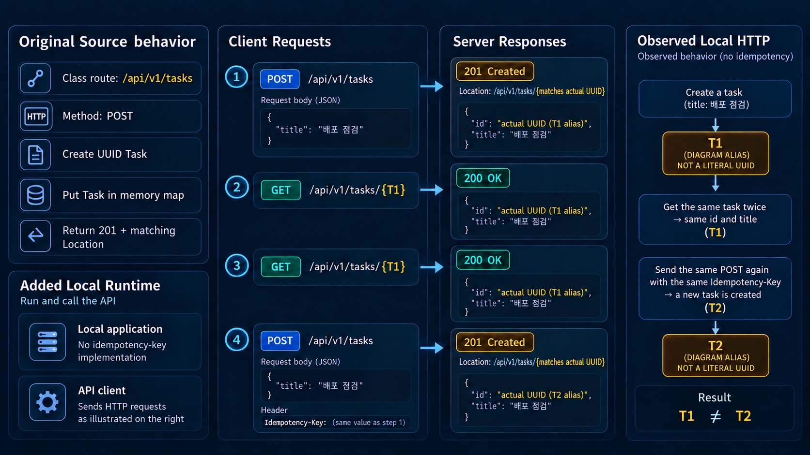

REST API 계약 · 생성·검증·명세와 실제 응답
생성과 조회를 반복하면 같은 자원일까요?
원문 Java를 그대로 추가 bootstrap·Java21·Boot4.1.1 loopback 앱에서 실행했습니다. 메모리 API의 실제 HTTP·생성 명세 관측이며 원문 Java25/8080·DB·인가·JUnit 슬라이스·PR/CI·스테이징·실제 배포는 미실행입니다.
원문 TaskController + 추가 실제 HTTP 입력
T1/T2는 각 실행의 실제 random UUID에 붙인 설명용 별칭이며 UUID나 실제 URI 문자열이 아닙니다. 같은 Idempotency-Key도 원문에 처리 정책이 없으면 중복을 막지 않습니다. 부하·동시성 시험은 아닙니다.
POST는201 · Location과 본문 id 일치
title=배포 점검을 보내 실제201을 얻었습니다. Location의 식별자는 본문 UUIDv4와 일치했습니다. T1이라는 URI를 발명한 것이 아닙니다.

지금의 요청·응답·계약 관찰값
함께 읽을 코드
원문·추가 loopback HTTP fixture·명시적 모델의 짧은 발췌입니다. 강조는 설명하는 위치이며 실시간 실행 줄이 아닙니다.
짧은 코드 강조는 설명 위치이며 실시간 실행 줄이 아닙니다. 실제 HTTP 관측·명세·모델을 구분하고 원문의 미구현 계약은 별도로 읽습니다.
실제 관측·모델 근거 보기
최종 frozen 실제 JSON/PASS 발췌입니다. 실제 CHECK19개와 모델3개를 구분합니다. 불일치 CHECK의 PASS는 재현을 뜻하며 계약 일치를 뜻하지 않습니다. 모델 장면에는 PASS가 없습니다. 전체 원문의 구현·검증 완료가 아닌 선택 핵심 보강입니다.
원문·추가 실험 전체 코드와 실제 검증 근거
원문332줄6fence와 완전한 TaskController·ApiErrors Java를 바이트 그대로 보존했습니다. 원문이 Initializr에 있다고 가정한 bootstrap과 Java21/Gradle9.8.0/BOM4.1.1/-parameters 설정은 추가 실험입니다. 실제 Java21.0.6·Boot4.1.1·Spring7.0.9·Tomcat11.0.24·springdoc3.1.1, 의존성60개·fixture4개 SHA를 기록했습니다. 새 loopback/port0에서18 HTTP 요청과19 CHECK를 관찰했으며19개 독립 실험이라는 뜻은 아닙니다. main·독립 temp 재현은 모델3개까지 전체 frozen과 일치했습니다.
실제 POST201·Location/body UUID 일치, 반복 GET200, 같은 추가 Idempotency-Key로도 별도 UUID 생성,404 Problem Details와 입력·변환·media·mapping 경계를 구분했습니다. T1/T2는 실행마다 생성한 실제 UUID의 설명 별칭이며 실제 URI가 아닙니다. 모두0인 UUID는 실제 없는 자원 요청 입력입니다. @NotBlank는 trim을 하지 않았습니다. 전체 UUID·시각·동적 port·PID와 원시 응답은 아래 원자료에만 남깁니다.
라이브러리 springdoc3.1.1과 실제 생성 문서 OpenAPI3.1.0은 다른 값입니다. 실제 POST201과 문서의200 응답 불일치를 확인했으며 해당 CHECK의 PASS는 불일치 재현이지 계약 일치가 아닙니다. minLength1과 공백 길이3의 추가 predicate 비교는 전체 JSON Schema 검증이 아닙니다. Swagger302→HTML200은 HTTP 관측이며 브라우저 UI·JavaScript·try-it-out을 실행하지 않았습니다.
첫 JVM에서 조회한 T1은 새 JVM에서404였고 자체 프로세스2개·port2개를 종료했습니다. 원문 메모리 map의 재시작 경계이며 DB rollback·migration·복제 시험이 아닙니다. 소비자 호환성은 Python 집합 모델, HTTP 의미와 전달 과정은 원문·문헌 모델입니다. 실제 소비자/Jackson 설정·원문 Java25/8080 전체 설정·실DB·인증/인가·분산 멱등 store·목록/페이지·JUnit/WebMvcTest·PR/CI·스테이징·실제 배포/운영 관측은 미실행입니다. 이번 보강을 원문 전체의 구현·검증 완료로 표시하지 않습니다.
원문·추가 실행 범위와 재현 안내
# D03 원문 메모리 API와 실제 생성 명세
원문332줄6fence(Mermaid3/Groovy1/Java1/bash1)를 전문 검토·SHA 추출했다. 이전 연구 Markdown과 달라 현재 저장소 원문을 기준으로 했다. 완전한 Java block05를 TaskExample.java에 바이트 그대로 복사했다. 추가 TasksApplication은 원문이 Initializr에서 제공한다고 가정한 bootstrap이다. Java21 Gradle9.8.0/BOM4.1.1/WebMVC·Validation·springdoc3.1.1/-parameters 설정과 새loopback/port0 실행 인수를 구분한다. 원문 Java25/8080/Initializr 전체 설정을 그대로 실행한 것은 아니다.
첫 offline compile은 springdoc 자체 JAR가 아닌 선택된 Jackson2.22/2.22.1 transitive cache 누락으로 실패했다. 같은 새 프로젝트에서 선언된 MavenCentral·동일 버전으로 recordRuntime을 한 번 online 실행해 해결했고 이후 새 run은 offline으로 통과했다. 원문이나 버전을 낮춰 바꾸지 않았고 저장공간·LLM 한도 문제가 아니었다. compile 실패와 resolve 로그를 보존했다.
실제 Java21.0.6/Boot4.1.1/FW7.0.9/Tomcat11.0.24/springdoc3.1.1과 runtime artifact60개 SHA를 확인했다. 새0700 run 아래 원문·추가 bootstrap의 private 사본을 컴파일하고 자체 Boot JVM을127.0.0.1/port0에서 실행했다. 기존8080·학습자 서버·DB·외부 API는 사용하지 않았다. actual raw에는18 HTTP 요청, 두 JVM의 PID/port·전체 응답·실제 UUID와 생성 명세를 보존했다. 19개 CHECK는 겹치는 관찰 단위이며19개 독립 API 시험이 아니다.
유효 POST는201·Location과body UUID가 일치하고 title='배포 점검'이었다. UUID는 매회 실제 생성한v4이며 T1/T2는 그림용 호칭이다. raw UUID를 바꾸거나 가짜 고정 UUID로 실행한 것이 아니다. T1의 GET두번은200·id/title동일이었다. 같은body·같은 추가 Idempotency-Key header로 다시 POST해도201/서로다른UUID였다. 원문에는 멱등 키 처리 코드가 없으며 header 자체가 중복을 막지 않는다. 분산 멱등성·경합·트랜잭션을 검증한 결과가 아니다.
없는 고정nilUUID는404/application/problem+json으로 type=https://api.example.test/problems/task-not-found,title=Task not found,status404,detail의nilUUID와instance=/api/v1/tasks/nilUUID전체경로가 나타났다. instance는 원문에서 setter로 지정하지 않았고 실제 Framework가 채운 결과다. type URI를 네트워크로 fetch하지 않았다. 이 객체는 원문 TaskNotFound advice이며 다른 모든 오류를 같은 형식으로 만든 것은 아니다.
제목 missing/null/공백3개는각400, 앞뒤공백이 있는 정상글자는201/공백그대로였다. @NotBlank는 trim이 아니다. malformedJSON400·Content-Type text/plain415·not-a-uuid 경로400·collection GET405/AllowPOST를 관찰했다. 원문은 collection POST·item GET만 구현하며 목록 API가 아니다. T1 GET에추가status=closed&limit=1을 붙여도 같은task를 반환했다. 실제 필터·페이지 기능을 구현했다고 해석하지 않는다.
실제 /v3/api-docs는200/OpenAPI3.1.0·경로2개였다. 라이브러리 springdoc3.1.1과 생성 설명의 OpenAPI3.1.0은 다른 버전이다. 원문의 create는실제201인데 생성된POSTresponses는['200']이고201/Location계약을명시하지않았다. 해당 CHECK의PASS는이불일치의재현이며 API계약일치통과가아니다. 명시적인응답annotation으로고칠수있다는문헌권고와원문수정·수정후실험을구분한다. 이번에는원문annotation을고치지않았다.
생성 CreateTask 스키마는object/title string/minLength1/requiredtitle, Task는id string uuid/title string이었다. 추가 Python length predicate에서 공백3자의길이3은minLength1을충족하지만 원문실제검증은400이었다. 전체JSONSchema validator를실행하거나스키마의모든제약동등성을증명한것은아니다. 생성required필드와실제NotBlank 의미를나누어읽는다.
Swagger 경로는HTTP302→/swagger-ui/index.html→HTML200을확인했다. 브라우저JS/UI/try-it-out을실행한결과가아니다. 첫 JVM을 종료하고 같은 소스의 새 JVM을 띄우면 기존T1 GET은404였다. source ConcurrentHashMap은메모리이므로 프로세스재시작경계의관찰이며 DBrollback·migration·서버간복제실험이아니다. 두자체JVM종료/자체포트2개닫힘을확인했고 전역서비스를조작하지않았다.
별도모델3개는 Pythonset소비자계약비교, HTTPsafe/idempotent문헌, 합의→검증→리뷰/CI→배포→관측의미실행흐름이다. strict/tolerant결과는필드이름집합계산이지실제Jackson/제품소비자의설정검증이아니다. 원문에는PUT/DELETE·DB·인증/인가·분산멱등저장소·페이지API·JUnit슬라이스·PR/CI·운영배포/지표가없거나이번범위에서미실행이다.
main최종19개freeze뒤새run의일반replay가19관찰·3모델전체frozen과일치했다. raw timestamp/UUID/PID/port/date header·절대경로는비교값에섞지않고원자료에남겼다. frozen은실제로확인한형식·동등관계·명시alias·고정nil예시·문서내용만비교한다. 일반재현은 `python3 docs/design/d03-2026-10-20/source-proof/run-proof.py --runtime-root /Users/ds/research/javaexperience-d03-20261020/_data/runtime`이며 --freeze를 넣지 않는다.
공식연구는CodexCLI gpt-6-luna/OpenAI직접경로다. 첫실행자가불필요한nestedCodex를시도해옵션/초기화오류를냈고부분보고서로남았다. 같은Luna/OpenAI직접retry에서재위임없이직접web3회/nestedCLI0/error0/turn.completed를확인했다. 다른model/provider/LiteLLM으로바꾸지않았다. 첫원시로그는연구폴더attempt-01에보존하며해당시도의무관한config조회출력은저장소로복사하지않았다. 메인이공식9본문과actualruntime을별도로대조했다. 버전별라이브러리일반성·전체스키마·실제소비자·보안/성능·운영안전성·원문전체실행완료를주장하지않는다.
별도temp사본의독립재현도19CHECK/3모델전체frozen/main일치·18HTTP·원문Java/60dependency/4fixtureSHA와own2PID·port닫힘을대조했다. 독립실행경로·한계는independent-replay.json에있다.
원문332줄·6개 fence SHA
{
"source": "docs/knowledge/D03-rest-api-dev-process.md",
"sha256": "c91a9ac8a9f9168b51a174cf39084c684d3e0e52ced12446b9283b23676a71c7",
"lines": 332,
"originalBlocks": [
{
"block": 1,
"language": "mermaid",
"file": "block-01.mmd",
"sha256": "3267f0447ec5c2accfac1938678752fe65b6b1615f875b369266e34cc7122f5c"
},
{
"block": 2,
"language": "mermaid",
"file": "block-02.mmd",
"sha256": "63a406bd537ab7e0e8b6881490332029eca7550c4aa6a06d0ad6a08fbde5df21"
},
{
"block": 3,
"language": "mermaid",
"file": "block-03.mmd",
"sha256": "5c3990d4ee5e9e0cbfb0fcec9d1521c06bcf0439116c118e3bfa821b48b2ac4f"
},
{
"block": 4,
"language": "groovy",
"file": "block-04.gradle",
"sha256": "55f7cdcb264fd00d3bd232c2ba7019e787953b415659e5d3c54d520662366c39"
},
{
"block": 5,
"language": "java",
"file": "block-05.java",
"sha256": "6597eac74336804d640858b4eab4c4b1fc3328fe86aa0010d9da8ce5304cb05f"
},
{
"block": 6,
"language": "bash",
"file": "block-06.sh",
"sha256": "688b1ae97fc601cc592e871025206729506b8518ca132fbaf88deb0e2544f35b"
}
],
"status": "original332lines6fences/completeJava byteexact; extra bootstrapJava21Boot4.1.1/FW7.0.9/Tomcat11.0.24/springdoc3.1.1/60deps actual18HTTP19CHECK3models mainfreeze/fresh wholematch; originalJava25/8080/DB/JUnit/CI/deploy notrun"
}실제 CHECK19·별도 모델3 전체
{
"checks": [
"actual-openapi-document-available",
"actual-openapi-minlength-is-not-notblank-policy",
"actual-openapi-schema-observed",
"actual-openapi-status-compared-to-runtime",
"actual-swagger-redirect-and-html",
"private-boot-processes-and-ports-closed",
"source-collection-get-not-implemented-405",
"source-create-201-location-and-body",
"source-get-repeated-same-representation",
"source-invalid-path-uuid-400",
"source-java-byteexact-extra-loopback-runtime",
"source-malformed-json-400",
"source-memory-resource-lost-after-process-restart",
"source-not-found-problem-detail",
"source-notblank-does-not-trim-title",
"source-notblank-rejects-missing-null-blank",
"source-post-same-key-still-new-resource",
"source-query-does-not-add-filter-pagination",
"source-unsupported-media-type-415"
],
"facts": {
"source-java-byteexact-extra-loopback-runtime": {
"sourceJavaByteExact": true,
"java": "21.0.6",
"boot": "4.1.1",
"spring": "7.0.9",
"tomcat": "11.0.24",
"springdoc": "3.1.1",
"bind": "127.0.0.1",
"scope": "extra bootstrap/Java21/Gradle/-parameters/port0; not source Java25/8080/Initializr full setup"
},
"source-create-201-location-and-body": {
"status": 201,
"locationMatchesBodyId": true,
"uuidVersion": 4,
"responseFields": [
"id",
"title"
],
"title": "배포 점검",
"resourceAlias": "T1",
"scope": "T1 is this run actual random UUID alias, raw UUID retained separately"
},
"source-get-repeated-same-representation": {
"statuses": [
200,
200
],
"sameIdAndTitle": true,
"resourceAlias": "T1",
"scope": "these two reads of one fixture, not load/concurrency proof"
},
"source-post-same-key-still-new-resource": {
"statuses": [
201,
201
],
"differentIds": true,
"sameBody": true,
"sameAddedHeader": "Idempotency-Key",
"aliases": [
"T1",
"T2"
],
"scope": "source has no idempotency-key implementation; a header alone does not deduplicate"
},
"source-not-found-problem-detail": {
"status": 404,
"contentType": "application/problem+json",
"problem": {
"detail": "Task not found: 00000000-0000-0000-0000-000000000000",
"instance": "/api/v1/tasks/00000000-0000-0000-0000-000000000000",
"status": 404,
"title": "Task not found",
"type": "https://api.example.test/problems/task-not-found"
},
"scope": "original TaskNotFound advice; problem type URI is an identifier, not fetched"
},
"source-notblank-rejects-missing-null-blank": {
"statuses": {
"missing": 400,
"null": 400,
"blank": 400
},
"scope": "Bean Validation; custom 404 advice does not itself handle these errors"
},
"source-notblank-does-not-trim-title": {
"status": 201,
"storedResponseTitle": " 배포 점검 ",
"whitespacePreserved": true,
"scope": "validation is not normalization; no DB storage involved"
},
"source-malformed-json-400": {
"status": 400,
"scope": "HTTP message conversion, not NotBlank business validation"
},
"source-unsupported-media-type-415": {
"status": 415,
"requestContentType": "text/plain"
},
"source-invalid-path-uuid-400": {
"status": 400,
"pathId": "not-a-uuid",
"scope": "path conversion before TaskNotFound map lookup"
},
"source-collection-get-not-implemented-405": {
"status": 405,
"allow": "POST",
"scope": "sample implements POST collection and GET item; no list API"
},
"source-query-does-not-add-filter-pagination": {
"status": 200,
"sameTask": true,
"addedQuery": "status=closed&limit=1",
"scope": "sample ignores these extra query parameters; no filter/page contract implemented"
},
"actual-openapi-document-available": {
"status": 200,
"openapiVersion": "3.1.0",
"paths": [
"/api/v1/tasks",
"/api/v1/tasks/{taskId}"
],
"postResponseCodes": [
"200"
],
"scope": "actual generated springdoc description, not Swagger browser rendering"
},
"actual-openapi-status-compared-to-runtime": {
"actualCreateStatus": 201,
"documentedResponseCodes": [
"200"
],
"documentsActual201": false,
"statusMismatch": true,
"scope": "observed mismatch in this pinned fixture; PASS records reproduction, not contract agreement; original source unchanged"
},
"actual-openapi-schema-observed": {
"createTaskSchema": {
"type": "object",
"properties": {
"title": {
"type": "string",
"minLength": 1
}
},
"required": [
"title"
]
},
"taskSchema": {
"type": "object",
"properties": {
"id": {
"type": "string",
"format": "uuid"
},
"title": {
"type": "string"
}
}
},
"requestBodyRequired": true,
"scope": "actual generated schemas; not assumed equal to all runtime validation behavior"
},
"actual-openapi-minlength-is-not-notblank-policy": {
"documentedMinLength": 1,
"extraBlankSampleLength": 3,
"lengthPredicatePasses": true,
"actualBlankRequestStatus": 400,
"scope": "extra length predicate compared with actual source validation; not a full JSON Schema validator"
},
"actual-swagger-redirect-and-html": {
"redirectStatus": 302,
"redirectPath": "/swagger-ui/index.html",
"htmlStatus": 200,
"scope": "HTTP/static HTML only, browser UI/JS/try-it-out not executed"
},
"source-memory-resource-lost-after-process-restart": {
"beforeStatus": 200,
"afterRestartStatus": 404,
"differentProcess": true,
"resourceAlias": "T1",
"scope": "source in-memory map; not DB rollback or data migration"
},
"private-boot-processes-and-ports-closed": {
"processesEnded": 2,
"portsClosed": 2,
"scope": "only own subprocesses; existing user services unchanged"
}
},
"models": {
"consumer-evolution": {
"kind": "added Python contract model",
"oldFields": [
"id",
"title"
],
"newFields": [
"id",
"priority",
"title"
],
"strictKnownFieldsAccept": false,
"tolerantKnownFieldsAccept": true,
"newRequiredInputAcceptedByOldRequest": false,
"scope": "set comparison model; not actual client/Jackson configuration/production consumer"
},
"http-semantics": {
"kind": "source/literature distinction",
"GET": "safe/idempotent intent",
"POST": "not generally idempotent",
"DELETE": "idempotent intended effect does not require identical responses",
"scope": "no source PUT/DELETE implementation or distributed idempotency store"
},
"delivery-review": {
"kind": "source-derived process, unexecuted",
"steps": [
"acceptance/contract",
"implementation/tests",
"review/CI",
"staging/deploy",
"observe/follow-up"
],
"scope": "no actual PR/CI/staging/deployment/monitoring/rollback/JUnit slice tests"
}
}
}원문 그대로 TaskController·ApiErrors
package example.tasks;
import java.net.URI;
import java.util.UUID;
import java.util.concurrent.ConcurrentHashMap;
import java.util.concurrent.ConcurrentMap;
import jakarta.validation.Valid;
import jakarta.validation.constraints.NotBlank;
import org.springframework.http.HttpStatus;
import org.springframework.http.ProblemDetail;
import org.springframework.http.ResponseEntity;
import org.springframework.web.bind.annotation.ExceptionHandler;
import org.springframework.web.bind.annotation.GetMapping;
import org.springframework.web.bind.annotation.PathVariable;
import org.springframework.web.bind.annotation.PostMapping;
import org.springframework.web.bind.annotation.RequestBody;
import org.springframework.web.bind.annotation.RequestMapping;
import org.springframework.web.bind.annotation.RestController;
import org.springframework.web.bind.annotation.RestControllerAdvice;
@RestController
@RequestMapping("/api/v1/tasks")
class TaskController {
private final ConcurrentMap<UUID, Task> tasks = new ConcurrentHashMap<>();
@PostMapping
ResponseEntity<Task> create(@Valid @RequestBody CreateTask input) {
Task task = new Task(UUID.randomUUID(), input.title());
tasks.put(task.id(), task);
return ResponseEntity.created(URI.create("/api/v1/tasks/" + task.id())).body(task);
}
@GetMapping("/{taskId}")
Task find(@PathVariable UUID taskId) {
Task task = tasks.get(taskId);
if (task == null) throw new TaskNotFound(taskId);
return task;
}
record CreateTask(@NotBlank String title) {}
record Task(UUID id, String title) {}
}
class TaskNotFound extends RuntimeException {
TaskNotFound(UUID id) { super("Task not found: " + id); }
}
@RestControllerAdvice
class ApiErrors {
@ExceptionHandler(TaskNotFound.class)
ProblemDetail notFound(TaskNotFound exception) {
ProblemDetail problem = ProblemDetail.forStatusAndDetail(
HttpStatus.NOT_FOUND, exception.getMessage());
problem.setType(URI.create("https://api.example.test/problems/task-not-found"));
problem.setTitle("Task not found");
return problem;
}
}
추가 TasksApplication bootstrap
package example.tasks;
import org.springframework.boot.SpringApplication;
import org.springframework.boot.autoconfigure.SpringBootApplication;
// 원문에서 Initializr가 제공한다고 가정한 bootstrap을 추가 실험에만 둔다.
@SpringBootApplication
public class TasksApplication {
public static void main(String[] args) {
SpringApplication.run(TasksApplication.class, args);
}
}
추가 Java21·BOM·springdoc·컴파일 설정
plugins { id 'java' }
repositories { mavenCentral() }
java { toolchain { languageVersion = JavaLanguageVersion.of(21) } }
sourceSets.main.java.srcDirs = ['java']
dependencies {
implementation platform('org.springframework.boot:spring-boot-dependencies:4.1.1')
implementation 'org.springframework.boot:spring-boot-starter-webmvc'
implementation 'org.springframework.boot:spring-boot-starter-validation'
implementation 'org.springdoc:springdoc-openapi-starter-webmvc-ui:3.1.1'
}
tasks.register('recordRuntime') {
dependsOn classes
doLast {
def rows=configurations.runtimeClasspath.resolvedConfiguration.resolvedArtifacts.collect {
[coordinate:it.moduleVersion.id.toString(),file:it.file.absolutePath,sha256:java.security.MessageDigest.getInstance('SHA-256').digest(it.file.bytes).encodeHex().toString()]
}.sort { it.coordinate }
file('dependencies.json').text=groovy.json.JsonOutput.prettyPrint(groovy.json.JsonOutput.toJson(rows))+'\n'
file('classpath.txt').text=sourceSets.main.runtimeClasspath.asPath
}
}
tasks.withType(JavaCompile).configureEach { options.compilerArgs += '-parameters' }
추가 HTTP 관찰기 전체
"""원문 메모리 API와 실제 springdoc 설명을 추가 Java21/loopback 환경에서 관찰한다."""
from pathlib import Path
import argparse,hashlib,http.client,json,os,re,shutil,socket,subprocess,tempfile,time,uuid
from urllib.parse import urlsplit
OUT=Path(__file__).resolve().parent;ROOT=OUT.parents[3]
JAVA=Path('/Users/ds/Library/Java/JavaVirtualMachines/corretto-21.0.6/Contents/Home')
p=argparse.ArgumentParser();p.add_argument('--runtime-root',required=True);p.add_argument('--freeze',action='store_true');a=p.parse_args()
runtime=Path(a.runtime_root).resolve();runtime.mkdir(parents=True,exist_ok=True)
run=Path(tempfile.mkdtemp(prefix='run-',dir=runtime));os.chmod(run,0o700)
checks=[];facts={};processes=[];raw={'run':str(run),'requests':[],'processes':[]}
def sha(path):return hashlib.sha256(Path(path).read_bytes()).hexdigest()
def check(id,ok,value):
if not ok:raise AssertionError(id)
checks.append(id);facts[id]=json.loads(json.dumps(value));print('PASS '+id,flush=True)
def command(arguments,label):
env=os.environ.copy();env.update(JAVA_HOME=str(JAVA),TZ='UTC',LC_ALL='C')
r=subprocess.run(arguments,cwd=run,env=env,capture_output=True,text=True,timeout=120)
(run/(label+'.log')).write_text(r.stdout+r.stderr)
if r.returncode:raise AssertionError(label+' failed; inspect private raw log')
return r
def start(label):
logfile=run/(label+'.log');stream=logfile.open('w')
proc=subprocess.Popen([str(JAVA/'bin/java'),'-cp',(project/'classpath.txt').read_text(),'example.tasks.TasksApplication',
'--server.address=127.0.0.1','--server.port=0','--spring.main.banner-mode=off'],
cwd=run,stdout=stream,stderr=subprocess.STDOUT)
processes.append((proc,stream,logfile));deadline=time.monotonic()+40
while time.monotonic()<deadline:
match=re.search(r'Tomcat started on port (\d+)',logfile.read_text())
if match:
port=int(match.group(1));raw['processes'].append({'label':label,'pid':proc.pid,'port':port});return proc,port
if proc.poll()is not None:raise AssertionError('Boot ended before ready')
time.sleep(.05)
raise AssertionError('Boot ready deadline')
def stop(proc):
if proc.poll()is None:proc.terminate()
try:proc.wait(timeout=15)
except subprocess.TimeoutExpired:proc.kill();proc.wait(timeout=5)
def request(port,method,path,payload=None,headers=None):
h={'Accept':'application/json'};h.update(headers or {})
if isinstance(payload,dict):payload=json.dumps(payload,ensure_ascii=False).encode();h.setdefault('Content-Type','application/json')
elif isinstance(payload,str):payload=payload.encode()
c=http.client.HTTPConnection('127.0.0.1',port,timeout=8)
try:
c.request(method,path,body=payload,headers=h);r=c.getresponse();body=r.read().decode();response={'method':method,'path':path,'status':r.status,'headers':dict((k.lower(),v)for k,v in r.getheaders()),'body':body}
try:response['json']=json.loads(body)
except json.JSONDecodeError:pass
raw['requests'].append(response);return response
finally:c.close()
meta=json.loads((OUT/'source.json').read_text());assert sha(ROOT/meta['source'])==meta['sha256']
for b in meta['originalBlocks']:assert sha(OUT/'original'/b['file'])==b['sha256']
assert(OUT/'original/block-05.java').read_bytes()==(OUT/'fixture/java/example/tasks/TaskExample.java').read_bytes()
try:
version=command([str(JAVA/'bin/java'),'-version'],'java-version');assert '"21.0.6"'in version.stderr
project=run/'project';shutil.copytree(OUT/'fixture',project)
command([str(ROOT/'gradlew'),'-p',str(project),'--offline','--no-daemon','--console=plain','recordRuntime'],'compile')
shutil.copyfile(run/'compile.log',OUT/'compile.log');deps=json.loads((project/'dependencies.json').read_text());assert all(sha(x['file'])==x['sha256']for x in deps)
(OUT/'dependencies.json').write_text(json.dumps(deps,indent=2)+'\n')
coords={x['coordinate'].split(':')[1]:x['coordinate'].split(':')[2]for x in deps}
first,port=start('boot-first')
check('source-java-byteexact-extra-loopback-runtime',coords['spring-boot']=='4.1.1'and coords['springdoc-openapi-starter-webmvc-ui']=='3.1.1',
{'sourceJavaByteExact':True,'java':'21.0.6','boot':coords['spring-boot'],'spring':coords['spring-core'],'tomcat':coords['tomcat-embed-core'],
'springdoc':coords['springdoc-openapi-starter-webmvc-ui'],'bind':'127.0.0.1','scope':'extra bootstrap/Java21/Gradle/-parameters/port0; not source Java25/8080/Initializr full setup'})
collection='/api/v1/tasks';title='배포 점검';key={'Idempotency-Key':'d03-public-demo-key'}
created=request(port,'POST',collection,{'title':title},key);task=created.get('json',{});identifier=task.get('id');parsed=uuid.UUID(identifier)
check('source-create-201-location-and-body',created['status']==201 and task['title']==title and parsed.version==4 and created['headers'].get('location')==collection+'/'+identifier,
{'status':created['status'],'locationMatchesBodyId':True,'uuidVersion':parsed.version,'responseFields':sorted(task),'title':task['title'],'resourceAlias':'T1','scope':'T1 is this run actual random UUID alias, raw UUID retained separately'})
found=request(port,'GET',collection+'/'+identifier);again=request(port,'GET',collection+'/'+identifier)
check('source-get-repeated-same-representation',found['status']==again['status']==200 and found.get('json')==again.get('json')==task,
{'statuses':[found['status'],again['status']],'sameIdAndTitle':True,'resourceAlias':'T1','scope':'these two reads of one fixture, not load/concurrency proof'})
repeated=request(port,'POST',collection,{'title':title},key)
check('source-post-same-key-still-new-resource',repeated['status']==201 and repeated['json']['id']!=identifier,
{'statuses':[created['status'],repeated['status']],'differentIds':True,'sameBody':True,'sameAddedHeader':'Idempotency-Key','aliases':['T1','T2'],'scope':'source has no idempotency-key implementation; a header alone does not deduplicate'})
missing_id='00000000-0000-0000-0000-000000000000';missing=request(port,'GET',collection+'/'+missing_id);problem=missing.get('json',{})
check('source-not-found-problem-detail',missing['status']==404 and problem.get('status')==404 and problem.get('type')=='https://api.example.test/problems/task-not-found'and problem.get('title')=='Task not found'and missing['headers'].get('content-type','').startswith('application/problem+json'),
{'status':missing['status'],'contentType':missing['headers']['content-type'],'problem':problem,'scope':'original TaskNotFound advice; problem type URI is an identifier, not fetched'})
results={}
for label,payload in [('missing',{}),('null',{'title':None}),('blank',{'title':' '})]:results[label]=request(port,'POST',collection,payload)['status']
check('source-notblank-rejects-missing-null-blank',all(v==400 for v in results.values()),{'statuses':results,'scope':'Bean Validation; custom 404 advice does not itself handle these errors'})
spaces=' 배포 점검 ';padded=request(port,'POST',collection,{'title':spaces})
check('source-notblank-does-not-trim-title',padded['status']==201 and padded['json']['title']==spaces,
{'status':padded['status'],'storedResponseTitle':padded['json']['title'],'whitespacePreserved':True,'scope':'validation is not normalization; no DB storage involved'})
malformed=request(port,'POST',collection,'{"title":',{'Content-Type':'application/json'})
check('source-malformed-json-400',malformed['status']==400,{'status':malformed['status'],'scope':'HTTP message conversion, not NotBlank business validation'})
media=request(port,'POST',collection,'hello',{'Content-Type':'text/plain'})
check('source-unsupported-media-type-415',media['status']==415,{'status':media['status'],'requestContentType':'text/plain'})
badid=request(port,'GET',collection+'/not-a-uuid')
check('source-invalid-path-uuid-400',badid['status']==400,{'status':badid['status'],'pathId':'not-a-uuid','scope':'path conversion before TaskNotFound map lookup'})
method=request(port,'GET',collection)
check('source-collection-get-not-implemented-405',method['status']==405 and'POST'in method['headers'].get('allow',''),
{'status':method['status'],'allow':method['headers'].get('allow'),'scope':'sample implements POST collection and GET item; no list API'})
filtered=request(port,'GET',collection+'/'+identifier+'?status=closed&limit=1')
check('source-query-does-not-add-filter-pagination',filtered['status']==200 and filtered.get('json')==task,
{'status':filtered['status'],'sameTask':True,'addedQuery':'status=closed&limit=1','scope':'sample ignores these extra query parameters; no filter/page contract implemented'})
description=request(port,'GET','/v3/api-docs');spec=description.get('json',{});paths=spec.get('paths',{});post=paths.get(collection,{}).get('post',{});response_codes=sorted(post.get('responses',{}))
check('actual-openapi-document-available',description['status']==200 and collection in paths and collection+'/{taskId}'in paths,
{'status':description['status'],'openapiVersion':spec.get('openapi'),'paths':sorted(paths),'postResponseCodes':response_codes,'scope':'actual generated springdoc description, not Swagger browser rendering'})
check('actual-openapi-status-compared-to-runtime',created['status']==201 and response_codes==['200'],
{'actualCreateStatus':created['status'],'documentedResponseCodes':response_codes,'documentsActual201':'201'in response_codes,'statusMismatch':'201'not in response_codes,'scope':'observed mismatch in this pinned fixture; PASS records reproduction, not contract agreement; original source unchanged'})
schemas=spec.get('components',{}).get('schemas',{});create_schema=schemas.get('CreateTask',{});task_schema=schemas.get('Task',{})
check('actual-openapi-schema-observed',bool(create_schema)and bool(task_schema),
{'createTaskSchema':create_schema,'taskSchema':task_schema,'requestBodyRequired':post.get('requestBody',{}).get('required'),'scope':'actual generated schemas; not assumed equal to all runtime validation behavior'})
check('actual-openapi-minlength-is-not-notblank-policy',create_schema['properties']['title'].get('minLength')==1 and len(' ')>=1 and results['blank']==400,
{'documentedMinLength':create_schema['properties']['title']['minLength'],'extraBlankSampleLength':len(' '),'lengthPredicatePasses':len(' ')>=create_schema['properties']['title']['minLength'],'actualBlankRequestStatus':results['blank'],'scope':'extra length predicate compared with actual source validation; not a full JSON Schema validator'})
swagger=request(port,'GET','/swagger-ui.html',headers={'Accept':'text/html'});location=swagger['headers'].get('location','');swagger_path=urlsplit(location).path
static=request(port,'GET',swagger_path,headers={'Accept':'text/html'})if swagger_path else None
check('actual-swagger-redirect-and-html',swagger['status']in[301,302,303,307,308]and static is not None and static['status']==200 and'Swagger UI'in static['body'],
{'redirectStatus':swagger['status'],'redirectPath':swagger_path,'htmlStatus':static['status'],'scope':'HTTP/static HTML only, browser UI/JS/try-it-out not executed'})
raw['uuidAliases']={'T1':identifier,'T2':repeated['json']['id']};raw['openapi']=spec
stop(first);second,second_port=start('boot-restarted');after=request(second_port,'GET',collection+'/'+identifier)
check('source-memory-resource-lost-after-process-restart',after['status']==404 and second.pid!=first.pid,
{'beforeStatus':found['status'],'afterRestartStatus':after['status'],'differentProcess':True,'resourceAlias':'T1','scope':'source in-memory map; not DB rollback or data migration'})
finally:
for proc,stream,logfile in reversed(processes):
stop(proc);stream.close();shutil.copyfile(logfile,OUT/logfile.name)
(OUT/'runtime-last.json').write_text(json.dumps(raw,ensure_ascii=False,indent=2)+'\n')
closed=[]
for item in raw['processes']:
try:socket.create_connection(('127.0.0.1',item['port']),timeout=1).close();closed.append(False)
except OSError:closed.append(True)
check('private-boot-processes-and-ports-closed',len(processes)==2 and all(proc.poll()is not None for proc,_,_ in processes)and all(closed),
{'processesEnded':2,'portsClosed':2,'scope':'only own subprocesses; existing user services unchanged'})
old_payload={'id':'T1','title':'배포 점검'};added_payload={**old_payload,'priority':'normal'}
models={
'consumer-evolution':{'kind':'added Python contract model','oldFields':sorted(old_payload),'newFields':sorted(added_payload),'strictKnownFieldsAccept':set(added_payload)<=set(old_payload),'tolerantKnownFieldsAccept':set(old_payload)<=set(added_payload),'newRequiredInputAcceptedByOldRequest':{'title','priority'}<=set({'title':'배포 점검'}),'scope':'set comparison model; not actual client/Jackson configuration/production consumer'},
'http-semantics':{'kind':'source/literature distinction','GET':'safe/idempotent intent','POST':'not generally idempotent','DELETE':'idempotent intended effect does not require identical responses','scope':'no source PUT/DELETE implementation or distributed idempotency store'},
'delivery-review':{'kind':'source-derived process, unexecuted','steps':['acceptance/contract','implementation/tests','review/CI','staging/deploy','observe/follow-up'],'scope':'no actual PR/CI/staging/deployment/monitoring/rollback/JUnit slice tests'}
}
observed={'checks':sorted(checks),'facts':facts,'models':models};(OUT/'execution.json').write_text(json.dumps(observed,ensure_ascii=False,indent=2)+'\n')
frozen=OUT/'checkpoints/expected-execution.json';frozen.parent.mkdir(exist_ok=True)
if a.freeze:frozen.write_text(json.dumps(observed,ensure_ascii=False,indent=2)+'\n')
else:assert observed==json.loads(frozen.read_text()),'frozen mismatch; investigate before re-freezing'
print(json.dumps({'checks':len(checks),'models':len(models),'frozenMatch':not a.freeze}),flush=True)
실제18 HTTP·두 JVM·UUID·생성 명세 원자료
{
"run": "/Users/ds/research/javaexperience-d03-20261020/_data/runtime/run-_am1tby8",
"requests": [
{
"method": "POST",
"path": "/api/v1/tasks",
"status": 201,
"headers": {
"location": "/api/v1/tasks/88951f7d-aabe-4bed-a239-7c23603a1507",
"content-type": "application/json",
"transfer-encoding": "chunked",
"date": "Tue, 20 Oct 2026 13:58:12 GMT"
},
"body": "{\"id\":\"88951f7d-aabe-4bed-a239-7c23603a1507\",\"title\":\"배포 점검\"}",
"json": {
"id": "88951f7d-aabe-4bed-a239-7c23603a1507",
"title": "배포 점검"
}
},
{
"method": "GET",
"path": "/api/v1/tasks/88951f7d-aabe-4bed-a239-7c23603a1507",
"status": 200,
"headers": {
"content-type": "application/json",
"content-length": "69",
"date": "Tue, 20 Oct 2026 13:58:12 GMT"
},
"body": "{\"id\":\"88951f7d-aabe-4bed-a239-7c23603a1507\",\"title\":\"배포 점검\"}",
"json": {
"id": "88951f7d-aabe-4bed-a239-7c23603a1507",
"title": "배포 점검"
}
},
{
"method": "GET",
"path": "/api/v1/tasks/88951f7d-aabe-4bed-a239-7c23603a1507",
"status": 200,
"headers": {
"content-type": "application/json",
"content-length": "69",
"date": "Tue, 20 Oct 2026 13:58:12 GMT"
},
"body": "{\"id\":\"88951f7d-aabe-4bed-a239-7c23603a1507\",\"title\":\"배포 점검\"}",
"json": {
"id": "88951f7d-aabe-4bed-a239-7c23603a1507",
"title": "배포 점검"
}
},
{
"method": "POST",
"path": "/api/v1/tasks",
"status": 201,
"headers": {
"location": "/api/v1/tasks/4e2419e2-3c72-4242-8c1f-78802f762427",
"content-type": "application/json",
"transfer-encoding": "chunked",
"date": "Tue, 20 Oct 2026 13:58:12 GMT"
},
"body": "{\"id\":\"4e2419e2-3c72-4242-8c1f-78802f762427\",\"title\":\"배포 점검\"}",
"json": {
"id": "4e2419e2-3c72-4242-8c1f-78802f762427",
"title": "배포 점검"
}
},
{
"method": "GET",
"path": "/api/v1/tasks/00000000-0000-0000-0000-000000000000",
"status": 404,
"headers": {
"content-type": "application/problem+json",
"transfer-encoding": "chunked",
"date": "Tue, 20 Oct 2026 13:58:12 GMT"
},
"body": "{\"detail\":\"Task not found: 00000000-0000-0000-0000-000000000000\",\"instance\":\"/api/v1/tasks/00000000-0000-0000-0000-000000000000\",\"status\":404,\"title\":\"Task not found\",\"type\":\"https://api.example.test/problems/task-not-found\"}",
"json": {
"detail": "Task not found: 00000000-0000-0000-0000-000000000000",
"instance": "/api/v1/tasks/00000000-0000-0000-0000-000000000000",
"status": 404,
"title": "Task not found",
"type": "https://api.example.test/problems/task-not-found"
}
},
{
"method": "POST",
"path": "/api/v1/tasks",
"status": 400,
"headers": {
"content-type": "application/json",
"transfer-encoding": "chunked",
"date": "Tue, 20 Oct 2026 13:58:12 GMT",
"connection": "close"
},
"body": "{\"timestamp\":\"2026-10-20T13:58:12.750Z\",\"status\":400,\"error\":\"Bad Request\",\"path\":\"/api/v1/tasks\"}",
"json": {
"timestamp": "2026-10-20T13:58:12.750Z",
"status": 400,
"error": "Bad Request",
"path": "/api/v1/tasks"
}
},
{
"method": "POST",
"path": "/api/v1/tasks",
"status": 400,
"headers": {
"content-type": "application/json",
"transfer-encoding": "chunked",
"date": "Tue, 20 Oct 2026 13:58:12 GMT",
"connection": "close"
},
"body": "{\"timestamp\":\"2026-10-20T13:58:12.756Z\",\"status\":400,\"error\":\"Bad Request\",\"path\":\"/api/v1/tasks\"}",
"json": {
"timestamp": "2026-10-20T13:58:12.756Z",
"status": 400,
"error": "Bad Request",
"path": "/api/v1/tasks"
}
},
{
"method": "POST",
"path": "/api/v1/tasks",
"status": 400,
"headers": {
"content-type": "application/json",
"transfer-encoding": "chunked",
"date": "Tue, 20 Oct 2026 13:58:12 GMT",
"connection": "close"
},
"body": "{\"timestamp\":\"2026-10-20T13:58:12.759Z\",\"status\":400,\"error\":\"Bad Request\",\"path\":\"/api/v1/tasks\"}",
"json": {
"timestamp": "2026-10-20T13:58:12.759Z",
"status": 400,
"error": "Bad Request",
"path": "/api/v1/tasks"
}
},
{
"method": "POST",
"path": "/api/v1/tasks",
"status": 201,
"headers": {
"location": "/api/v1/tasks/24a24beb-f144-4abd-8da5-dc0dba36293e",
"content-type": "application/json",
"transfer-encoding": "chunked",
"date": "Tue, 20 Oct 2026 13:58:12 GMT"
},
"body": "{\"id\":\"24a24beb-f144-4abd-8da5-dc0dba36293e\",\"title\":\" 배포 점검 \"}",
"json": {
"id": "24a24beb-f144-4abd-8da5-dc0dba36293e",
"title": " 배포 점검 "
}
},
{
"method": "POST",
"path": "/api/v1/tasks",
"status": 400,
"headers": {
"content-type": "application/json",
"transfer-encoding": "chunked",
"date": "Tue, 20 Oct 2026 13:58:12 GMT",
"connection": "close"
},
"body": "{\"timestamp\":\"2026-10-20T13:58:12.764Z\",\"status\":400,\"error\":\"Bad Request\",\"path\":\"/api/v1/tasks\"}",
"json": {
"timestamp": "2026-10-20T13:58:12.764Z",
"status": 400,
"error": "Bad Request",
"path": "/api/v1/tasks"
}
},
{
"method": "POST",
"path": "/api/v1/tasks",
"status": 415,
"headers": {
"accept": "application/json, application/yaml, application/*+json",
"content-type": "application/json",
"transfer-encoding": "chunked",
"date": "Tue, 20 Oct 2026 13:58:12 GMT"
},
"body": "{\"timestamp\":\"2026-10-20T13:58:12.766Z\",\"status\":415,\"error\":\"Unsupported Media Type\",\"path\":\"/api/v1/tasks\"}",
"json": {
"timestamp": "2026-10-20T13:58:12.766Z",
"status": 415,
"error": "Unsupported Media Type",
"path": "/api/v1/tasks"
}
},
{
"method": "GET",
"path": "/api/v1/tasks/not-a-uuid",
"status": 400,
"headers": {
"content-type": "application/json",
"transfer-encoding": "chunked",
"date": "Tue, 20 Oct 2026 13:58:12 GMT",
"connection": "close"
},
"body": "{\"timestamp\":\"2026-10-20T13:58:12.769Z\",\"status\":400,\"error\":\"Bad Request\",\"path\":\"/api/v1/tasks/not-a-uuid\"}",
"json": {
"timestamp": "2026-10-20T13:58:12.769Z",
"status": 400,
"error": "Bad Request",
"path": "/api/v1/tasks/not-a-uuid"
}
},
{
"method": "GET",
"path": "/api/v1/tasks",
"status": 405,
"headers": {
"allow": "POST",
"content-type": "application/json",
"transfer-encoding": "chunked",
"date": "Tue, 20 Oct 2026 13:58:12 GMT"
},
"body": "{\"timestamp\":\"2026-10-20T13:58:12.772Z\",\"status\":405,\"error\":\"Method Not Allowed\",\"path\":\"/api/v1/tasks\"}",
"json": {
"timestamp": "2026-10-20T13:58:12.772Z",
"status": 405,
"error": "Method Not Allowed",
"path": "/api/v1/tasks"
}
},
{
"method": "GET",
"path": "/api/v1/tasks/88951f7d-aabe-4bed-a239-7c23603a1507?status=closed&limit=1",
"status": 200,
"headers": {
"content-type": "application/json",
"content-length": "69",
"date": "Tue, 20 Oct 2026 13:58:12 GMT"
},
"body": "{\"id\":\"88951f7d-aabe-4bed-a239-7c23603a1507\",\"title\":\"배포 점검\"}",
"json": {
"id": "88951f7d-aabe-4bed-a239-7c23603a1507",
"title": "배포 점검"
}
},
{
"method": "GET",
"path": "/v3/api-docs",
"status": 200,
"headers": {
"content-type": "application/json",
"content-length": "998",
"date": "Tue, 20 Oct 2026 13:58:12 GMT"
},
"body": "{\"openapi\":\"3.1.0\",\"info\":{\"title\":\"OpenAPI definition\",\"version\":\"v0\"},\"servers\":[{\"url\":\"http://127.0.0.1:50264\",\"description\":\"Generated server url\"}],\"paths\":{\"/api/v1/tasks\":{\"post\":{\"tags\":[\"task-controller\"],\"operationId\":\"create\",\"requestBody\":{\"content\":{\"application/json\":{\"schema\":{\"$ref\":\"#/components/schemas/CreateTask\"}}},\"required\":true},\"responses\":{\"200\":{\"description\":\"OK\",\"content\":{\"*/*\":{\"schema\":{\"$ref\":\"#/components/schemas/Task\"}}}}}}},\"/api/v1/tasks/{taskId}\":{\"get\":{\"tags\":[\"task-controller\"],\"operationId\":\"find\",\"parameters\":[{\"name\":\"taskId\",\"in\":\"path\",\"required\":true,\"schema\":{\"type\":\"string\",\"format\":\"uuid\"}}],\"responses\":{\"200\":{\"description\":\"OK\",\"content\":{\"*/*\":{\"schema\":{\"$ref\":\"#/components/schemas/Task\"}}}}}}}},\"components\":{\"schemas\":{\"CreateTask\":{\"type\":\"object\",\"properties\":{\"title\":{\"type\":\"string\",\"minLength\":1}},\"required\":[\"title\"]},\"Task\":{\"type\":\"object\",\"properties\":{\"id\":{\"type\":\"string\",\"format\":\"uuid\"},\"title\":{\"type\":\"string\"}}}}}}",
"json": {
"openapi": "3.1.0",
"info": {
"title": "OpenAPI definition",
"version": "v0"
},
"servers": [
{
"url": "http://127.0.0.1:50264",
"description": "Generated server url"
}
],
"paths": {
"/api/v1/tasks": {
"post": {
"tags": [
"task-controller"
],
"operationId": "create",
"requestBody": {
"content": {
"application/json": {
"schema": {
"$ref": "#/components/schemas/CreateTask"
}
}
},
"required": true
},
"responses": {
"200": {
"description": "OK",
"content": {
"*/*": {
"schema": {
"$ref": "#/components/schemas/Task"
}
}
}
}
}
}
},
"/api/v1/tasks/{taskId}": {
"get": {
"tags": [
"task-controller"
],
"operationId": "find",
"parameters": [
{
"name": "taskId",
"in": "path",
"required": true,
"schema": {
"type": "string",
"format": "uuid"
}
}
],
"responses": {
"200": {
"description": "OK",
"content": {
"*/*": {
"schema": {
"$ref": "#/components/schemas/Task"
}
}
}
}
}
}
}
},
"components": {
"schemas": {
"CreateTask": {
"type": "object",
"properties": {
"title": {
"type": "string",
"minLength": 1
}
},
"required": [
"title"
]
},
"Task": {
"type": "object",
"properties": {
"id": {
"type": "string",
"format": "uuid"
},
"title": {
"type": "string"
}
}
}
}
}
}
},
{
"method": "GET",
"path": "/swagger-ui.html",
"status": 302,
"headers": {
"location": "/swagger-ui/index.html",
"content-length": "0",
"date": "Tue, 20 Oct 2026 13:58:12 GMT"
},
"body": ""
},
{
"method": "GET",
"path": "/swagger-ui/index.html",
"status": 200,
"headers": {
"cache-control": "no-store",
"accept-ranges": "bytes",
"content-type": "text/html",
"content-length": "734",
"date": "Tue, 20 Oct 2026 13:58:12 GMT"
},
"body": "<!-- HTML for static distribution bundle build -->\n<!DOCTYPE html>\n<html lang=\"en\">\n <head>\n <meta charset=\"UTF-8\">\n <title>Swagger UI</title>\n <link rel=\"stylesheet\" type=\"text/css\" href=\"./swagger-ui.css\" />\n <link rel=\"stylesheet\" type=\"text/css\" href=\"index.css\" />\n <link rel=\"icon\" type=\"image/png\" href=\"./favicon-32x32.png\" sizes=\"32x32\" />\n <link rel=\"icon\" type=\"image/png\" href=\"./favicon-16x16.png\" sizes=\"16x16\" />\n </head>\n\n <body>\n <div id=\"swagger-ui\"></div>\n <script src=\"./swagger-ui-bundle.js\" charset=\"UTF-8\"> </script>\n <script src=\"./swagger-ui-standalone-preset.js\" charset=\"UTF-8\"> </script>\n <script src=\"./swagger-initializer.js\" charset=\"UTF-8\"> </script>\n </body>\n</html>\n"
},
{
"method": "GET",
"path": "/api/v1/tasks/88951f7d-aabe-4bed-a239-7c23603a1507",
"status": 404,
"headers": {
"content-type": "application/problem+json",
"transfer-encoding": "chunked",
"date": "Tue, 20 Oct 2026 13:58:14 GMT"
},
"body": "{\"detail\":\"Task not found: 88951f7d-aabe-4bed-a239-7c23603a1507\",\"instance\":\"/api/v1/tasks/88951f7d-aabe-4bed-a239-7c23603a1507\",\"status\":404,\"title\":\"Task not found\",\"type\":\"https://api.example.test/problems/task-not-found\"}",
"json": {
"detail": "Task not found: 88951f7d-aabe-4bed-a239-7c23603a1507",
"instance": "/api/v1/tasks/88951f7d-aabe-4bed-a239-7c23603a1507",
"status": 404,
"title": "Task not found",
"type": "https://api.example.test/problems/task-not-found"
}
}
],
"processes": [
{
"label": "boot-first",
"pid": 40093,
"port": 50264
},
{
"label": "boot-restarted",
"pid": 40095,
"port": 50285
}
],
"uuidAliases": {
"T1": "88951f7d-aabe-4bed-a239-7c23603a1507",
"T2": "4e2419e2-3c72-4242-8c1f-78802f762427"
},
"openapi": {
"openapi": "3.1.0",
"info": {
"title": "OpenAPI definition",
"version": "v0"
},
"servers": [
{
"url": "http://127.0.0.1:50264",
"description": "Generated server url"
}
],
"paths": {
"/api/v1/tasks": {
"post": {
"tags": [
"task-controller"
],
"operationId": "create",
"requestBody": {
"content": {
"application/json": {
"schema": {
"$ref": "#/components/schemas/CreateTask"
}
}
},
"required": true
},
"responses": {
"200": {
"description": "OK",
"content": {
"*/*": {
"schema": {
"$ref": "#/components/schemas/Task"
}
}
}
}
}
}
},
"/api/v1/tasks/{taskId}": {
"get": {
"tags": [
"task-controller"
],
"operationId": "find",
"parameters": [
{
"name": "taskId",
"in": "path",
"required": true,
"schema": {
"type": "string",
"format": "uuid"
}
}
],
"responses": {
"200": {
"description": "OK",
"content": {
"*/*": {
"schema": {
"$ref": "#/components/schemas/Task"
}
}
}
}
}
}
}
},
"components": {
"schemas": {
"CreateTask": {
"type": "object",
"properties": {
"title": {
"type": "string",
"minLength": 1
}
},
"required": [
"title"
]
},
"Task": {
"type": "object",
"properties": {
"id": {
"type": "string",
"format": "uuid"
},
"title": {
"type": "string"
}
}
}
}
}
}
}추가 fixture4개 SHA
[
{
"file": "fixture/build.gradle",
"sha256": "3e576d3fea1fcf47b6c2d8ef9064f8d8cf5d9fa707fd539eecbeaf4d83c8480d"
},
{
"file": "fixture/java/example/tasks/TaskExample.java",
"sha256": "6597eac74336804d640858b4eab4c4b1fc3328fe86aa0010d9da8ce5304cb05f"
},
{
"file": "fixture/java/example/tasks/TasksApplication.java",
"sha256": "d881f8182561effa97f6a6e25939542be560b23270d11d97c78465a9c4f6c7d3"
},
{
"file": "fixture/settings.gradle",
"sha256": "2f3ab1d8fdafbe5c92f29838ab8f698985e9daeacea41a8c08c58bd8645c4c01"
}
]실제 의존성60개 SHA
[
{
"coordinate": "ch.qos.logback:logback-classic:1.5.38",
"file": "/Users/ds/.gradle/caches/modules-2/files-2.1/ch.qos.logback/logback-classic/1.5.38/bc5873cb4a7f502ce18ce2977d98ad26b9f96444/logback-classic-1.5.38.jar",
"sha256": "afb439c61fa287c9e1925523b13baab03617e724406a389d48b61c2c3e46b700"
},
{
"coordinate": "ch.qos.logback:logback-core:1.5.38",
"file": "/Users/ds/.gradle/caches/modules-2/files-2.1/ch.qos.logback/logback-core/1.5.38/7b1d133b29bf42ff268cf3f71d1308b80480fb8d/logback-core-1.5.38.jar",
"sha256": "a855a0fc97b1d06f4efb1c3bba5ebd0eb508d8b58e68e89e4bbc23a85135c883"
},
{
"coordinate": "com.fasterxml.jackson.core:jackson-annotations:2.22",
"file": "/Users/ds/.gradle/caches/modules-2/files-2.1/com.fasterxml.jackson.core/jackson-annotations/2.22/15c67f9498d6934cff9510fc70c5a12e52290457/jackson-annotations-2.22.jar",
"sha256": "21ddb598807d3a51a876704eb979d9296e1c6a6f47ab1826ff88c6d6a127a2d0"
},
{
"coordinate": "com.fasterxml.jackson.core:jackson-core:2.22.1",
"file": "/Users/ds/.gradle/caches/modules-2/files-2.1/com.fasterxml.jackson.core/jackson-core/2.22.1/da7ffb60088d7e8f37ecdd3b617520971cc7b9bf/jackson-core-2.22.1.jar",
"sha256": "941ff029bcdb93e83d209ce516c1a7fb8bbac07d0a2fa122f5bf194b2cd7b4f4"
},
{
"coordinate": "com.fasterxml.jackson.core:jackson-databind:2.22.1",
"file": "/Users/ds/.gradle/caches/modules-2/files-2.1/com.fasterxml.jackson.core/jackson-databind/2.22.1/9e2fb91831cce9cb9262909cd76647508949f232/jackson-databind-2.22.1.jar",
"sha256": "7dcd7e53bec1f56c7ad278bd1ca0840bebcc595d61ce44d6a8439abb75b965b2"
},
{
"coordinate": "com.fasterxml.jackson.dataformat:jackson-dataformat-yaml:2.22.1",
"file": "/Users/ds/.gradle/caches/modules-2/files-2.1/com.fasterxml.jackson.dataformat/jackson-dataformat-yaml/2.22.1/af5fde2414e4a8d2617e7890f7068c26b5b66a33/jackson-dataformat-yaml-2.22.1.jar",
"sha256": "cc3a0e540791a9a1cbcd7584767b84572ffda0b72823856558f47dea69ae8ed1"
},
{
"coordinate": "com.fasterxml.jackson.datatype:jackson-datatype-jsr310:2.22.1",
"file": "/Users/ds/.gradle/caches/modules-2/files-2.1/com.fasterxml.jackson.datatype/jackson-datatype-jsr310/2.22.1/3377a0589c1b0e62bbe245ac8e9f56fa7d7b8bb9/jackson-datatype-jsr310-2.22.1.jar",
"sha256": "85da45b7e5e565418963ff8f0dcb184365b0557c15468933f4318dde5c3ce845"
},
{
"coordinate": "com.fasterxml:classmate:1.7.3",
"file": "/Users/ds/.gradle/caches/modules-2/files-2.1/com.fasterxml/classmate/1.7.3/f61c7e7b81e9249b0f6a05914eff9d54fb09f4a0/classmate-1.7.3.jar",
"sha256": "75fbda45456f123fb6e2028a6189442d8d0730b357adce4c0a6d7e789f70669b"
},
{
"coordinate": "commons-logging:commons-logging:1.3.6",
"file": "/Users/ds/.gradle/caches/modules-2/files-2.1/commons-logging/commons-logging/1.3.6/63e78ca6cd446c0ad166d14f03ed99e7efb3896d/commons-logging-1.3.6.jar",
"sha256": "f8ead8943401081dea0aa824b5b1ba40a0e4ed297a572a0f02258150a0b62357"
},
{
"coordinate": "io.micrometer:micrometer-commons:1.17.1",
"file": "/Users/ds/.gradle/caches/modules-2/files-2.1/io.micrometer/micrometer-commons/1.17.1/b1c3fdea68c5a81495cf1c16cf2905c5ad9f30d2/micrometer-commons-1.17.1.jar",
"sha256": "f2cee6ef046e72eec8128474c7f58c6217173b45ae373c30de0289f2a56ab0fd"
},
{
"coordinate": "io.micrometer:micrometer-observation:1.17.1",
"file": "/Users/ds/.gradle/caches/modules-2/files-2.1/io.micrometer/micrometer-observation/1.17.1/24c0b05bc06a9ab6f4e09a48949b6eccc179ca15/micrometer-observation-1.17.1.jar",
"sha256": "eb34f0cd84a879393ae5c21160fc06385ccdc74f36a4d1e31b199f59acfdaf71"
},
{
"coordinate": "io.swagger.core.v3:swagger-annotations-jakarta:2.2.55",
"file": "/Users/ds/.gradle/caches/modules-2/files-2.1/io.swagger.core.v3/swagger-annotations-jakarta/2.2.55/a8af2e7fdca945d8871316e84a9b3154694e26ba/swagger-annotations-jakarta-2.2.55.jar",
"sha256": "d464521aac0e9ae2cfead9d2f56e9e8c110ef4b15ad9c046408a087a4c58952b"
},
{
"coordinate": "io.swagger.core.v3:swagger-core-jakarta:2.2.55",
"file": "/Users/ds/.gradle/caches/modules-2/files-2.1/io.swagger.core.v3/swagger-core-jakarta/2.2.55/5fab7a2e1df29cfe3ae569f8b96a3534f5ca15a3/swagger-core-jakarta-2.2.55.jar",
"sha256": "3d72786a7133dbf8569dda19549e0ef3e0d68d01d3b4dd221a96eb1b29263d5f"
},
{
"coordinate": "io.swagger.core.v3:swagger-models-jakarta:2.2.55",
"file": "/Users/ds/.gradle/caches/modules-2/files-2.1/io.swagger.core.v3/swagger-models-jakarta/2.2.55/1c0f2d4ce28c69ad62a5e4de705aa67e1c55e935/swagger-models-jakarta-2.2.55.jar",
"sha256": "f83577d4090301a49342dd73708ace743ea46fe382e922a9e892368c45cc6a8d"
},
{
"coordinate": "jakarta.activation:jakarta.activation-api:2.1.4",
"file": "/Users/ds/.gradle/caches/modules-2/files-2.1/jakarta.activation/jakarta.activation-api/2.1.4/9e5c2a0d75dde71a0bedc4dbdbe47b78a5dc50f8/jakarta.activation-api-2.1.4.jar",
"sha256": "c9db52100ce6c8aac95cc39075f95720d2e561b11f8051b81c121ad4effd7004"
},
{
"coordinate": "jakarta.annotation:jakarta.annotation-api:3.0.0",
"file": "/Users/ds/.gradle/caches/modules-2/files-2.1/jakarta.annotation/jakarta.annotation-api/3.0.0/54f928fadec906a99d558536756d171917b9d936/jakarta.annotation-api-3.0.0.jar",
"sha256": "b01f55552284cfb149411e64eabca75e942d26d2e1786b32914250e4330afaa2"
},
{
"coordinate": "jakarta.validation:jakarta.validation-api:3.1.1",
"file": "/Users/ds/.gradle/caches/modules-2/files-2.1/jakarta.validation/jakarta.validation-api/3.1.1/ec8622148afc5564235d17af80ea80288d0e7f92/jakarta.validation-api-3.1.1.jar",
"sha256": "63ce00156388c365f3ac1be71fcfaf114682fc0c452020b5df6e7ec236e142ab"
},
{
"coordinate": "jakarta.xml.bind:jakarta.xml.bind-api:4.0.5",
"file": "/Users/ds/.gradle/caches/modules-2/files-2.1/jakarta.xml.bind/jakarta.xml.bind-api/4.0.5/161811f36cad3c65991502e80317f2f6703361df/jakarta.xml.bind-api-4.0.5.jar",
"sha256": "5e489b6c874c4119e003ff1403db523ee3a8959ec499f3de29e77245efccf216"
},
{
"coordinate": "org.apache.commons:commons-lang3:3.20.0",
"file": "/Users/ds/.gradle/caches/modules-2/files-2.1/org.apache.commons/commons-lang3/3.20.0/65897b3e5731220962e659e001904af3c3cbeba9/commons-lang3-3.20.0.jar",
"sha256": "69e5c9fa35da7a51a5fd2099dfe56a2d8d32cf233e2f6d770e796146440263f4"
},
{
"coordinate": "org.apache.logging.log4j:log4j-api:2.25.5",
"file": "/Users/ds/.gradle/caches/modules-2/files-2.1/org.apache.logging.log4j/log4j-api/2.25.5/6c80ea65e41f7858f7e15cb390c98c36167c7b3a/log4j-api-2.25.5.jar",
"sha256": "64777f73ea0b3104c04eb82befbdccc30a425a19e83ad06cb2f93aa303511863"
},
{
"coordinate": "org.apache.logging.log4j:log4j-to-slf4j:2.25.5",
"file": "/Users/ds/.gradle/caches/modules-2/files-2.1/org.apache.logging.log4j/log4j-to-slf4j/2.25.5/bafb12d62913815e040218e34c80d75ad6db09c1/log4j-to-slf4j-2.25.5.jar",
"sha256": "b68e8b47342dbc9b35644a14fe2efc0b7bf18da703910cd05ad5501ffe07bba1"
},
{
"coordinate": "org.apache.tomcat.embed:tomcat-embed-core:11.0.24",
"file": "/Users/ds/.gradle/caches/modules-2/files-2.1/org.apache.tomcat.embed/tomcat-embed-core/11.0.24/172bb449cba1a8ffcffa249727907602a4cc899/tomcat-embed-core-11.0.24.jar",
"sha256": "e7b966dcaac8c5ffa4f10e44031ebf5b71f2123560c08ac8b7120028615aea08"
},
{
"coordinate": "org.apache.tomcat.embed:tomcat-embed-el:11.0.24",
"file": "/Users/ds/.gradle/caches/modules-2/files-2.1/org.apache.tomcat.embed/tomcat-embed-el/11.0.24/3eafa072a45e67081452e56576ab4fe68b525fb5/tomcat-embed-el-11.0.24.jar",
"sha256": "ad0546f12dace008aacce18ba13222137760b310ca719e173d3e13021b9af6c6"
},
{
"coordinate": "org.apache.tomcat.embed:tomcat-embed-websocket:11.0.24",
"file": "/Users/ds/.gradle/caches/modules-2/files-2.1/org.apache.tomcat.embed/tomcat-embed-websocket/11.0.24/8cd43556888f042c90115d54b124a4648f2b413f/tomcat-embed-websocket-11.0.24.jar",
"sha256": "825160101f0da4a10e19b5730c2ae2f99f8c2c7a7211ac05562726c5e97ab91e"
},
{
"coordinate": "org.hibernate.validator:hibernate-validator:9.1.3.Final",
"file": "/Users/ds/.gradle/caches/modules-2/files-2.1/org.hibernate.validator/hibernate-validator/9.1.3.Final/1873374b24290d273160e998cb57bfe0f0a5d584/hibernate-validator-9.1.3.Final.jar",
"sha256": "0497ebbe23fafe4180b74bd0b96a67eee8556552decc4d3c120c1dc737a2b5fb"
},
{
"coordinate": "org.jboss.logging:jboss-logging:3.6.3.Final",
"file": "/Users/ds/.gradle/caches/modules-2/files-2.1/org.jboss.logging/jboss-logging/3.6.3.Final/1cc9f976725720bb4a66f80af3e3aa6b9890d969/jboss-logging-3.6.3.Final.jar",
"sha256": "7c12ee575508f81e22b1db9334b969d0ec54ef0fd1dcba24eeab1a44235fc366"
},
{
"coordinate": "org.jspecify:jspecify:1.0.1",
"file": "/Users/ds/.gradle/caches/modules-2/files-2.1/org.jspecify/jspecify/1.0.1/3d60fd98eb8ade73004f4195c37b6317e02cf3d7/jspecify-1.0.1.jar",
"sha256": "070d75f261fe4c5b8202508366715f7f2d4660f88c8ef7e6d3575e48c9683b66"
},
{
"coordinate": "org.slf4j:jul-to-slf4j:2.0.18",
"file": "/Users/ds/.gradle/caches/modules-2/files-2.1/org.slf4j/jul-to-slf4j/2.0.18/79739c98001d5c9d078d087d5a348ec9e474ec8f/jul-to-slf4j-2.0.18.jar",
"sha256": "cbb7d1aaaa9e871eb1a06594abd911bf97027152976edf1edc315be75239204e"
},
{
"coordinate": "org.slf4j:slf4j-api:2.0.18",
"file": "/Users/ds/.gradle/caches/modules-2/files-2.1/org.slf4j/slf4j-api/2.0.18/78a9e7a37cd6360e0b818e86341b24123d28d4df/slf4j-api-2.0.18.jar",
"sha256": "44508fd1576500688c790b190acdd16fec4f8c79a3e0b900afd70503cf055f55"
},
{
"coordinate": "org.springdoc:springdoc-openapi-starter-common:3.1.1",
"file": "/Users/ds/.gradle/caches/modules-2/files-2.1/org.springdoc/springdoc-openapi-starter-common/3.1.1/2c49a5ccecd3190f307f03a5bf20b724da244796/springdoc-openapi-starter-common-3.1.1.jar",
"sha256": "8765460695778bc383f12d9f96d62195ec8ddaef64277854891e9ff0f76e9b97"
},
{
"coordinate": "org.springdoc:springdoc-openapi-starter-webmvc-api:3.1.1",
"file": "/Users/ds/.gradle/caches/modules-2/files-2.1/org.springdoc/springdoc-openapi-starter-webmvc-api/3.1.1/bf3d2d80134ef02a3dcbac3af2e0d78873355a61/springdoc-openapi-starter-webmvc-api-3.1.1.jar",
"sha256": "3b9aa208f93c3e6ff93ae505ea9b8467d00943ca9f6f0041ee0de8008d079a2d"
},
{
"coordinate": "org.springdoc:springdoc-openapi-starter-webmvc-ui:3.1.1",
"file": "/Users/ds/.gradle/caches/modules-2/files-2.1/org.springdoc/springdoc-openapi-starter-webmvc-ui/3.1.1/a6aeef2e3f3b353a9bf5c5898287d407101c9841/springdoc-openapi-starter-webmvc-ui-3.1.1.jar",
"sha256": "aba2b0885cfa2c3c0df6ba4cbafd877101edaa85c7bc10c430b010a7c726836b"
},
{
"coordinate": "org.springframework.boot:spring-boot-autoconfigure:4.1.1",
"file": "/Users/ds/.gradle/caches/modules-2/files-2.1/org.springframework.boot/spring-boot-autoconfigure/4.1.1/53c1c604301b4183faa480a5b9f2fd86a2f043c3/spring-boot-autoconfigure-4.1.1.jar",
"sha256": "59228756ddd76cea050f95d86deff334789bc53b6688beaa673b1af2b9794592"
},
{
"coordinate": "org.springframework.boot:spring-boot-http-converter:4.1.1",
"file": "/Users/ds/.gradle/caches/modules-2/files-2.1/org.springframework.boot/spring-boot-http-converter/4.1.1/886e76307151a64c8710c61e02a2323ab883b87c/spring-boot-http-converter-4.1.1.jar",
"sha256": "52a167430a918c223b2ccd2eb62aff91a8e43e6daebe5a07caa37b9a04c61cb9"
},
{
"coordinate": "org.springframework.boot:spring-boot-jackson:4.1.1",
"file": "/Users/ds/.gradle/caches/modules-2/files-2.1/org.springframework.boot/spring-boot-jackson/4.1.1/1defff7e3f9dda050f26e98da3285b4321920dc1/spring-boot-jackson-4.1.1.jar",
"sha256": "69a9b4d8850a0532a5e44ff7306a03621485b26596e7f9481de7d28e68a2dd42"
},
{
"coordinate": "org.springframework.boot:spring-boot-servlet:4.1.1",
"file": "/Users/ds/.gradle/caches/modules-2/files-2.1/org.springframework.boot/spring-boot-servlet/4.1.1/76881b573c8639708ce3d520b428209335f007fc/spring-boot-servlet-4.1.1.jar",
"sha256": "4dcb156e311a4c1ad5f1ed7eabd94a78ea74510b05c429a4fcfdcf8beb9d5882"
},
{
"coordinate": "org.springframework.boot:spring-boot-starter-jackson:4.1.1",
"file": "/Users/ds/.gradle/caches/modules-2/files-2.1/org.springframework.boot/spring-boot-starter-jackson/4.1.1/f8cd6a81994a207a808564515e5104548d1967bb/spring-boot-starter-jackson-4.1.1.jar",
"sha256": "d30e594a3e0f3a090438fc22000a87ab577a3b80c674180a10544ca331207f24"
},
{
"coordinate": "org.springframework.boot:spring-boot-starter-logging:4.1.1",
"file": "/Users/ds/.gradle/caches/modules-2/files-2.1/org.springframework.boot/spring-boot-starter-logging/4.1.1/c6831fe833182419def54db4c41fc34ce71f4fc5/spring-boot-starter-logging-4.1.1.jar",
"sha256": "8eca7d72c8434f5c3b935385c656cd5337f473434bdbcb4913b3b3a34897d178"
},
{
"coordinate": "org.springframework.boot:spring-boot-starter-tomcat-runtime:4.1.1",
"file": "/Users/ds/.gradle/caches/modules-2/files-2.1/org.springframework.boot/spring-boot-starter-tomcat-runtime/4.1.1/397ae80a471fa432ef858230c7d52498ee20ecd/spring-boot-starter-tomcat-runtime-4.1.1.jar",
"sha256": "580f0d9a9d02a1a6e387640e422af42f9dbdf302836d562ec595fdb2b31a1c29"
},
{
"coordinate": "org.springframework.boot:spring-boot-starter-tomcat:4.1.1",
"file": "/Users/ds/.gradle/caches/modules-2/files-2.1/org.springframework.boot/spring-boot-starter-tomcat/4.1.1/8a7b2b2fd2ec40ed7e56359fb68c9a8b5fde315c/spring-boot-starter-tomcat-4.1.1.jar",
"sha256": "f224d8504be3b413825ee85ef549a7b1598ee8512e062c6bd5ddce1043cd388a"
},
{
"coordinate": "org.springframework.boot:spring-boot-starter-validation:4.1.1",
"file": "/Users/ds/.gradle/caches/modules-2/files-2.1/org.springframework.boot/spring-boot-starter-validation/4.1.1/2c08283aef7b9b22b8d0892bca1c54660383b574/spring-boot-starter-validation-4.1.1.jar",
"sha256": "f86edd0ba377e67f1549359d936756e727d23944b4399d7682462b6717d0ded6"
},
{
"coordinate": "org.springframework.boot:spring-boot-starter-webmvc:4.1.1",
"file": "/Users/ds/.gradle/caches/modules-2/files-2.1/org.springframework.boot/spring-boot-starter-webmvc/4.1.1/7d25a0b22f776c7cc0cc18a88188113400b2b011/spring-boot-starter-webmvc-4.1.1.jar",
"sha256": "4aec3edbdf6317fefe23db1b989d8bba143a45a51c1fc32346146ecebf67d625"
},
{
"coordinate": "org.springframework.boot:spring-boot-starter:4.1.1",
"file": "/Users/ds/.gradle/caches/modules-2/files-2.1/org.springframework.boot/spring-boot-starter/4.1.1/50fe6a89fa4fd26e7caaec909ab1c4cc9afde5d4/spring-boot-starter-4.1.1.jar",
"sha256": "de5b2dd28400eda20914fd4a6054d0c201e68d2e4de35a25a4d89f054ccc2e63"
},
{
"coordinate": "org.springframework.boot:spring-boot-tomcat:4.1.1",
"file": "/Users/ds/.gradle/caches/modules-2/files-2.1/org.springframework.boot/spring-boot-tomcat/4.1.1/61450290ced8f16d8d00308f1aa81423d7660dc2/spring-boot-tomcat-4.1.1.jar",
"sha256": "17f65629e4eb3c979c0572b69b57d630bb12e64869e9d7520adddaa6734256b6"
},
{
"coordinate": "org.springframework.boot:spring-boot-validation:4.1.1",
"file": "/Users/ds/.gradle/caches/modules-2/files-2.1/org.springframework.boot/spring-boot-validation/4.1.1/e4a77e095430ec3b9f4c2382c1521fd07750d0f6/spring-boot-validation-4.1.1.jar",
"sha256": "c2546a81b6b7a39f51d889c99047f24567e4b28d1717fb53a65e9327cfc436f1"
},
{
"coordinate": "org.springframework.boot:spring-boot-web-server:4.1.1",
"file": "/Users/ds/.gradle/caches/modules-2/files-2.1/org.springframework.boot/spring-boot-web-server/4.1.1/d1eb8e523013ac3939ae59adc5335a3de704d11b/spring-boot-web-server-4.1.1.jar",
"sha256": "6912fb1fdf7f657a61ac050760fa835fb1e7496399291697e2901f82887a4fee"
},
{
"coordinate": "org.springframework.boot:spring-boot-webmvc:4.1.1",
"file": "/Users/ds/.gradle/caches/modules-2/files-2.1/org.springframework.boot/spring-boot-webmvc/4.1.1/3057d155bc66412ad906ecdd488e0fd617589151/spring-boot-webmvc-4.1.1.jar",
"sha256": "9f08c1fb938c45a8693fec5f3065be3aca203948a7ab4d56b06444986f75a6b2"
},
{
"coordinate": "org.springframework.boot:spring-boot:4.1.1",
"file": "/Users/ds/.gradle/caches/modules-2/files-2.1/org.springframework.boot/spring-boot/4.1.1/f958dfcba9bc998459cd7862894aa69220645c44/spring-boot-4.1.1.jar",
"sha256": "0d92b532b1d4020640e72d78c31af175c23db8e0ddd45b81855b7fdf4c9c70f0"
},
{
"coordinate": "org.springframework:spring-aop:7.0.9",
"file": "/Users/ds/.gradle/caches/modules-2/files-2.1/org.springframework/spring-aop/7.0.9/35f68fd8cdf30444e18835cec152f2619c4c46c7/spring-aop-7.0.9.jar",
"sha256": "b8c5d6bfcb1f4993f2cc124f7ab7fac40edf5256b9e43c2f7250a733cb5510e9"
},
{
"coordinate": "org.springframework:spring-beans:7.0.9",
"file": "/Users/ds/.gradle/caches/modules-2/files-2.1/org.springframework/spring-beans/7.0.9/2bee42fa948a5f32761fd0838de3baa1f51c0225/spring-beans-7.0.9.jar",
"sha256": "ff218b827a25c9e8929b0cd56dfb56916cea9d5b669ed97dc7cb262508ff548b"
},
{
"coordinate": "org.springframework:spring-context:7.0.9",
"file": "/Users/ds/.gradle/caches/modules-2/files-2.1/org.springframework/spring-context/7.0.9/7eb8e01ecf1633ddd4d64ca184194f967b6bc0aa/spring-context-7.0.9.jar",
"sha256": "7552a2fcfa30cea53eb14d7a65a7a8e1b1dd82e832a7164fb7e6fb105f438858"
},
{
"coordinate": "org.springframework:spring-core:7.0.9",
"file": "/Users/ds/.gradle/caches/modules-2/files-2.1/org.springframework/spring-core/7.0.9/e03c619fc5b26931973277f5ba65ae47967a20e3/spring-core-7.0.9.jar",
"sha256": "5195f4722699b39878d99a832549fe65df2890b159d063b88fff31b1ca65ae36"
},
{
"coordinate": "org.springframework:spring-expression:7.0.9",
"file": "/Users/ds/.gradle/caches/modules-2/files-2.1/org.springframework/spring-expression/7.0.9/9452ece85b97fa3e208046cc3a7e985c314b0034/spring-expression-7.0.9.jar",
"sha256": "046434c40f43819729b9b1db0e6c659dfa68184c1c2c2efa5f7b3a5b27c4e2e2"
},
{
"coordinate": "org.springframework:spring-web:7.0.9",
"file": "/Users/ds/.gradle/caches/modules-2/files-2.1/org.springframework/spring-web/7.0.9/c42f4ce0cded1526527296726c4ed30335dfaa10/spring-web-7.0.9.jar",
"sha256": "941ced476427bde2533872f293da535fd0258de3f3a650a7f1bfe01ed2927302"
},
{
"coordinate": "org.springframework:spring-webmvc:7.0.9",
"file": "/Users/ds/.gradle/caches/modules-2/files-2.1/org.springframework/spring-webmvc/7.0.9/53b41e6290df1a75fe0e0d16608c80a93bb63bdd/spring-webmvc-7.0.9.jar",
"sha256": "8f114c1461692c5e534e82b27de23b7fb23370db8dee7ce0c92d5106906c9555"
},
{
"coordinate": "org.webjars:swagger-ui:5.32.14",
"file": "/Users/ds/.gradle/caches/modules-2/files-2.1/org.webjars/swagger-ui/5.32.14/edcbecf8e026eefcd401dcc04b71cd9f96ee7600/swagger-ui-5.32.14.jar",
"sha256": "d17ca6b09c60518574c14d4a40318dc58a11ea92a962e94f30e5a286e1efa4a6"
},
{
"coordinate": "org.webjars:webjars-locator-lite:1.1.4",
"file": "/Users/ds/.gradle/caches/modules-2/files-2.1/org.webjars/webjars-locator-lite/1.1.4/4326893d9dc7c44c8e1e6e5ed75ac5e3701d0912/webjars-locator-lite-1.1.4.jar",
"sha256": "9f03705a0cb6adb8ef54c881f24c9433b83b88d4af2da12db97d8c5148521ded"
},
{
"coordinate": "org.yaml:snakeyaml:2.6",
"file": "/Users/ds/.gradle/caches/modules-2/files-2.1/org.yaml/snakeyaml/2.6/2bc14918a2f8d5414749ab12d0c590cd3198b8c1/snakeyaml-2.6.jar",
"sha256": "c8f7a98e7394adda02f6317249710e4d1b4c7a25aa8c7eace0c2eea52eb8bf85"
},
{
"coordinate": "tools.jackson.core:jackson-core:3.1.5",
"file": "/Users/ds/.gradle/caches/modules-2/files-2.1/tools.jackson.core/jackson-core/3.1.5/ccd7eb3269b8d33bc097b36770f367cdfe2f1150/jackson-core-3.1.5.jar",
"sha256": "9431b7fa2673bbb618c11d865fe15e13222fd182a214ff998cb7e56afd8f35d2"
},
{
"coordinate": "tools.jackson.core:jackson-databind:3.1.5",
"file": "/Users/ds/.gradle/caches/modules-2/files-2.1/tools.jackson.core/jackson-databind/3.1.5/782178f0b1fe088803c03b85eb9a406f60519044/jackson-databind-3.1.5.jar",
"sha256": "3a2338d996fd3056791df8d335fa9ba8a62a706ed4245ecf81b3e583df37d08a"
}
]첫 offline 실패와 동일 버전 의존성 확보 기록
[
{
"attempt": "first offline compile",
"failure": "uncached pinned transitive Jackson2.22/2.22.1 artifacts",
"cause": "springdoc3.1.1 was cached, but its selected BootBOM4.1.1 transitives were not all cached; not ENOSPC or LLM usage limit",
"resolution": "one normal Gradle recordRuntime in the fresh project using declared MavenCentral completed exit0; versions/source unchanged; next fresh run returns to offline",
"raw": "attempt-01-offline-compile.log",
"resolutionRaw": "resolve-online.log"
},
{
"attempt": "initial native observation after dependencies resolved",
"result": "18 observations green; actual create201 while generated POST response200; schema minLength1 vs actual blank400",
"followup": "tighten status-mismatch assertion to measured pinned-fixture response codes; add one explicit length-predicate/actual-blank comparison; source annotations unchanged",
"scope": "PASS means reproducing the mismatch, not API contract agreement; next intended freeze/fresh replay has19CHECK"
}
]독립 temp 재현·전체 frozen 대조
{
"reviewer": "p09_review",
"tempProof": "/var/folders/v7/q1cs_f5d0n7cccrbydpm88xr0000gn/T/d03-independent-proof-k4oggp3o/source-proof",
"runtime": "/Users/ds/research/javaexperience-d03-20261020/_data/reviewer-runtime/run-rm10qnju",
"checks": 19,
"models": 3,
"wholeFrozenMatch": true,
"actualHTTPRequests": 18,
"dependencySHA": 60,
"fixtureSHA": 4,
"sourceJavaByteExact": true,
"ownBootProcessesEnded": 2,
"ownPortsClosed": 2,
"unresolved": {
"critical": 0,
"important": 0,
"minor": 0
},
"scope": "native temp copy only; no source/UI/user Git modifications; no Swagger browser/JUnit/DB/Java25/8080/deploy"
}공식·규격 메인 대조와 확인 한계
{
"checkedAt": "2026-10-20",
"sources": [
{
"url": "https://www.rfc-editor.org/rfc/rfc9110.html",
"access": "main direct primary body open/find",
"supports": "safe/idempotent intent differs from identical response; POST generally not automatically retryable;201/Location semantics"
},
{
"url": "https://www.rfc-editor.org/rfc/rfc9457.html",
"access": "main direct primary body open/find",
"supports": "ProblemDetails status advisory must match real response; detail human-oriented, no parsing; type/instance identifiers"
},
{
"url": "https://springdoc.org/getting-started.html",
"access": "main direct primary body open/find",
"supports": "officialartifactversion3.1.1; /v3/api-docs and/swagger-ui.html routes, not proof of actual generated201"
},
{
"url": "https://docs.spring.io/spring-framework/reference/web/webmvc/mvc-ann-rest-exceptions.html",
"access": "main direct primary body open/find",
"supports": "ProblemDetail.status determines HTTP; unsetinstance populated from URLpath; problem+json negotiation"
},
{
"url": "https://docs.spring.io/spring-framework/reference/web/webmvc/mvc-controller/ann-methods/requestbody.html",
"access": "main direct primary body open/find",
"supports": "@Valid@RequestBody standard BeanValidation; default invalid400"
},
{
"url": "https://spec.openapis.org/oas/",
"access": "main direct primary body open/find",
"supports": "index lists3.2.1/3.2.0/3.1.x; library springdoc3.1.1 and actual generatedOAS3.1.0 are distinct"
},
{
"url": "https://google.aip.dev/180",
"access": "main direct primary body open/find",
"supports": "existingclient compatibility, cannot add required input to existingrequest"
},
{
"url": "https://google.aip.dev/158",
"access": "main direct primary body open/find",
"supports": "opaque URLsafe page tokens; Base64 alone insufficient; no source list/page API implemented here"
},
{
"url": "https://docs.spring.io/spring-boot/reference/testing/spring-boot-applications.html",
"access": "main direct primary body open/find",
"supports": "defaultMOCK no embedded server; RANDOM_PORT actualserver; this proof is directBootHTTP, not JUnit slice test"
}
],
"observedSeparately": [
"sourcecreate201/generatedPOSTresponse200 mismatch in pinned source fixture",
"generatedrequiredtitle/minLength1 vs actualblank400; addedlengthpredicate is notfullschema validation",
"sourceSpringProblemDetailinstance filled in actualHTTP",
"18HTTPrequests/19checks/60dependencies mainfreshfrozenmatch"
],
"corrections": [
"Luna retry report mentions future schema dates; current main-opened index only shows dates through2026-08-30, no future-date claim adopted",
"No general librarysupport/automatic201 inference conclusion from docs; actualruntime used separately"
],
"limits": [
"currentunversionedofficialreferences not proof of everypointrelease",
"no sourcepatch/realconsumer/Jacksonclientconfig/APIauth/DB/PR/CI/deploy/Swaggerbrowser execution"
]
}기존 전체 REST API 개발 과정 개념 지도 보기
Delivery & operations · D03
이 문서에서 볼 내용
개발 도구·배포·운영
D03. REST API 개발 과정
D03. REST API 개발 과정 — 요구사항에서 배포 가능한 API까지
원문 전체 · 코드·버전별 변화·실무 가이드·참고문헌
API 작업은 엔드포인트 하나를 코딩하는 일이 아니라, 소비자와 합의한 계약을 구현하고 안전하게 배포하는 과정이다. URI·메서드·상태 코드·요청/응답·에러를 먼저 정하면 프론트엔드와 백엔드가 병렬로 움직일 수 있다. OpenAPI 명세, 테스트, 리뷰, 단계적 배포가 계약의 누락과 하위호환 파손을 초기에 드러낸다.
011. 큰 그림
flowchart LR A["요구사항과 수용 기준"] --> B["리소스와 URI 설계"] B --> C["메서드와 상태 코드 설계"] C --> D["요청 응답 에러 계약"] D --> E["OpenAPI 명세 작성"] E --> F["프론트엔드와 예시 합의"] F --> G["Controller Service Repository 구현"] G --> H["단위 슬라이스 통합 테스트"] H --> I["Swagger UI와 명세 확인"] I --> J["코드 리뷰와 CI"] J --> K["스테이징 검증과 배포"] K --> L["지표 로그 피드백"] L --> A F -- "필드 의미가 다르면" --> D H -- "계약과 구현이 다르면" --> E J -- "호환성 문제면" --> D
그림은 “무엇을 만들지 결정”에서 “운영 결과를 보고 다음 변경을 시작”하는 순환을 보여준다. 설계 단계에서 전부 확정한 뒤 한 번에 넘기는 폭포수 절차가 아니다. 예를 들어 프론트엔드가 목록 화면에 필요한 정렬 기준을 발견하면 응답 예시와 페이지네이션 계약을 고친 뒤 구현을 이어 간다. 변경 내용은 OpenAPI diff와 리뷰에 다시 반영한다. 배포는 작업의 끝이 아니라 사용 가능한 계약을 운영 환경에 전달한 시점이다.
이 문서는 전체 개발 과정 D01 중에서도 한 API 변경을 정의하고 합의해 구현·검증·배포하는 세부 작업 흐름을 다룬다. 빌드 파이프라인·운영 관측·MVC 내부는 각각 D04·D09·S05를 참조한다.
022. 용어 사전
| 용어 | 한 줄 정의 | 실무 예시 | 헷갈리는 것과 차이 |
|---|---|---|---|
| 요구사항 | 해결할 문제·제약 | “할 일을 등록하고 찾는다” | 화면 기능보다 목적·범위가 넓다 |
| 수용 기준 | 완료를 판정할 결과 | 유효한 생성은 201 | 구현법이 아니라 관찰 가능한 조건 |
| 리소스 | API가 다루는 대상 | task, order |
화면·DB 테이블과 같을 필요 없음 |
| 엔드포인트 | HTTP 메서드와 경로 | POST /api/v1/tasks |
경로만 말하면 호출 의미가 불완전 |
| URI·URL | 식별자 / 위치까지 포함한 주소 | /tasks/42 |
현업에선 혼용하나 명세에선 구분 |
| 경로 변수 | 경로의 자원 식별 값 | /tasks/{id} |
필터를 담는 쿼리와 다름 |
| 쿼리 매개변수 | 필터·정렬·페이지 조건 | ?status=open&limit=20 |
자원 식별보다 선택 조건에 적합 |
| 헤더 | 본문 밖 메타데이터 | Content-Type |
JSON 필드가 아니며 HTTP 동작에 영향 |
| 요청 본문 | 서버에 보낼 데이터 | {"title":"점검"} |
복합 입력에 적합 |
| 상태 코드 | 요청 결과의 표준 분류 | 201, 409 | 본문의 success 필드로 대체 불가 |
| 안전한 메서드 | 의도상 리소스를 바꾸지 않는 메서드 | 조회 GET |
로그 기록 등 부수 동작과 구분 |
| 멱등성 | 같은 요청을 반복해도 의도 효과가 같은 성질 | PUT, DELETE |
응답이 같다는 뜻은 아님 |
| 멱등 키 | 중복 명령을 막는 클라이언트 키 | 결제 재시도 키 | 서버 저장·만료 정책이 필요 |
| 계약 | 소비자가 의존하는 입력·출력·의미 | 필수 title, UUID id |
문서뿐 아니라 실제 동작·변경 규칙 포함 |
| OpenAPI | HTTP API 설명 규격 | openapi.yaml |
Swagger UI는 규격이 아닌 표시 도구 |
| 명세 우선·코드 우선 | 명세를 먼저 작성 / 코드에서 생성 | YAML-first / springdoc | 작성 순서 차이, 일치 검증은 양쪽 모두 필요 |
| 페이지네이션 | 목록을 나눠 전달 | limit, nextPageToken |
page 번호·offset과 커서 방식은 안정성이 다름 |
| Problem Details | RFC 9457 오류 본문 형식 | application/problem+json |
상세 설명이 HTTP 상태 코드를 대체하지 않음 |
| 인증·인가 | 주체 확인 / 허용 작업 확인 | Bearer 토큰, 소유권 검사 | 로그인됐어도 작업 권한은 없을 수 있음 |
| 버저닝 | 호환되지 않는 계약을 식별·공존 | 경로 /v1 |
변경마다 버전을 올리지 않음 |
| 하위호환 | 기존 소비자가 새 서버에서도 동작 | 선택 응답 필드 추가 | 의미가 바뀌면 파싱돼도 깨질 수 있음 |
| 슬라이스·통합 테스트 | 일부 계층 / 연결된 앱 경로 검증 | @WebMvcTest / 랜덤 포트 |
테스트 범위·비용이 다름 |
| 리뷰·릴리스·배포 | 변경 검토 / 공개 결정 / 환경에 전달 | PR, 스테이징 배포 | 팀마다 release 의미가 달라 확인 필요 |
033. 단계별로 보기3.1 요구사항과 기준 · 3.2 리소스와 HTTP 계약 · 3.3 OpenAPI와 소비자 합의 · 3.4 구현과 검증
013.1 요구사항과 기준
무엇: “할 일을 등록한다”를 중복 제출, 필수 필드, 권한, 빈 목록 등 질문으로 나누고 테스트 가능한 수용 기준으로 바꾼다. 예: 유효한 생성은 201과 Location을 반환한다. 누가·입력·산출물: 제품·프론트·백엔드가 이슈에서 시나리오·정책을 확인해 범위, 예외, 완료 조건을 남긴다.
실패 신호: “비어 있음”, “최신”의 뜻이 다르거나 화면 요구가 구현 후 처음 나온다. 미결정 정책은 담당자를 정해 질문으로 남긴다.
023.2 리소스와 HTTP 계약
무엇: 리소스를 이름 붙이고 컬렉션 생성은 POST /api/v1/tasks, 단건 조회는 GET /api/v1/tasks/{taskId}처럼 메서드와 경로를 한 쌍으로 정한다. 누가·입력·산출물: 백엔드와 소비자가 기준·기존 URI를 보고 엔드포인트, 파라미터, 성공·오류 예시를 만든다. 실패: GET으로 변경을 수행하거나 모든 성공을 200, 모든 실패를 같은 오류로 뭉갠다.
| HTTP 요소 | 예시 | 합의할 것 |
|---|---|---|
| 메서드·경로 | POST /api/v1/tasks |
의도·재시도 의미 |
| 경로·쿼리 | /tasks/{id}, ?limit=20 |
식별 형식, 기본·최대값, 정렬 |
| 헤더 | Content-Type, Authorization: Bearer <token> |
JSON 형식, 버전·인증 요구 |
| 본문 | {"title":"점검"} |
필수·선택·널·검증 규칙 |
| 응답 | 201, Location, JSON |
성공·오류 상태, 본문 존재 여부 |
200은 성공 표현, 201은 자원 생성(가능하면 Location), 202는 비동기 접수, 204는 본문 없는 성공이다. 400 입력 오류, 401 인증 자격 부재, 403 이해했으나 거부, 404 현재 표현이 없거나 비공개, 409 현재 상태와 충돌, 422 형식은 알지만 지시를 처리하지 못한 경우를 검토한다(RFC 9110). 안전 메서드는 의도상 읽기 전용이며 PUT, DELETE와 안전 메서드는 멱등이다.
POST 재시도 중복이 치명적이면 멱등 키의 범위·보관·본문 불일치 규칙을 추가한다. 버전은 경로(/v1), 헤더, 쿼리, 미디어 타입 중 고른다. Framework 7 MVC는 네 위치를 지원한다.
경로는 라우팅·로그에서 읽기 쉽고, 헤더는 URL이 안정적인 대신 캐시 키·도구 설정을 명확히 해야 한다. 파괴적 변경에만 새 버전을 두고 지원 종료 계획을 공개한다.
033.3 OpenAPI와 소비자 합의
무엇: OpenAPI Description은 소스 없이 HTTP API를 발견·이해하게 하는 언어 독립 설명이다. 경로별 파라미터, 스키마, 상태, 보안과 성공·오류 예시를 적는다. 필수·nullable, 날짜·시간대, enum, 페이지 기본값도 합의한다.
누가·도구·산출물: 여러 소비자라면 YAML PR(design-first), 작은 내부 API라면 코드에서 생성(code-first)으로 시작할 수 있다. 프론트엔드와 예시를 공유해 버전 관리 명세를 남긴다.
Swagger UI는 명세를 탐색하는 도구다. 실패: 문서의 201과 실제 200이 다르거나 합의 전 각자 임시 타입을 만든다.
sequenceDiagram autonumber actor FE as 프론트엔드 participant API as 백엔드 participant SPEC as OpenAPI participant CODE as 구현과 테스트 FE->>API: 입력 결과 화면 요구 전달 API->>SPEC: 경로 메서드 예시 초안 SPEC-->>FE: 성공 오류 목록 예시 공유 FE->>API: 누락 필드 중복 재시도 질문 API->>SPEC: 수용 기준과 계약 수정 SPEC-->>FE: 합의한 타입 전달 API->>CODE: 계약에 맞춰 구현 CODE-->>SPEC: 구현과 생성 명세 비교
명세 우선은 병렬 작업·계약 리뷰에, 코드 우선은 빠른 시작에 편하다. 어느 쪽이든 생성 설명의 차이를 테스트나 CI diff로 찾는다. 애노테이션만 적고 오류 예시·호환 정책을 비우면 합의가 끝난 게 아니다.
043.4 구현과 검증
Controller는 HTTP 변환, Service는 유스케이스 규칙, Repository는 영속성 접근을 담당하게 나누고 요청·응답 DTO로 외부 계약과 DB 구조를 분리한다. 입력 검증·권한·트랜잭션 경계를 맞춘다. 입력·산출물: 승인된 명세와 기존 규칙에서 코드·설정·DB 변경을 만든다.
실패: Controller가 정책과 SQL을 모두 갖거나 엔티티를 그대로 반환한다. 구현 전체는 P06, REST 원칙·클라이언트는 S06, MVC 호출 내부는 S05 참조.
테스트는 Service 단위 테스트(정책), @WebMvcTest(경로·JSON·상태·오류), 통합 테스트(설정·저장소 연결)로 경계를 나눈다. @SpringBootTest의 기본 MOCK은 실제 서버를 띄우지 않으며 포트 검증은 RANDOM_PORT 등을 사용한다. OpenAPI /v3/api-docs와 Swagger UI를 비교하고 스테이징에서 핵심 요청을 smoke 테스트한다.
실패 신호는 문서와 응답 불일치, 컨텍스트 전체를 과도하게 올리는 빠른 테스트다. Spring 테스트 심화는 S18 참조.
오류 표준 RFC 9457은 type(문제 종류 URI), title, status, 발생 설명 detail, 식별자 instance를 정의한다. application/problem+json으로 반환하고 안정된 확장 코드·필드 오류를 더할 수 있다. HTTP 상태와 body의 status를 일치시키고 SQL·스택·토큰을 노출하지 않는다.
클라이언트는 문구 대신 type이나 코드를 분기 기준으로 쓴다. Spring Framework의 ProblemDetail, ErrorResponse, ResponseEntityExceptionHandler가 지원한다.
053.5 리뷰·배포·피드백
리뷰에서 필수 필드 추가, 제거·이름·타입 변경, 상태·의미 변경을 이전 소비자 관점으로 확인한다. 새 응답 필드도 엄격한 파서에선 깨질 수 있다. OpenAPI diff는 보조 장치다. CI는 빌드·테스트·명세를 검사하고, 스테이징 smoke 후 배포한다. 오류율·지연이 기준을 넘으면 책임자와 롤백을 정한다. 배포 방식은 D06, CI/CD는 D08 참조.
flowchart LR A["PR과 OpenAPI"] --> B["빌드 테스트 호환성 검사"] B --> C["스테이징 smoke"] C --> D["점진 배포"] D --> E["오류율 지연 확인"] E --> F["사용 확대"] E --> G["기준 초과 롤백"] G --> A
044. 직접 해보기
아래 실습은 로컬의 빈 디렉터리에 Spring Boot 프로젝트를 준비한다고 가정한다. Spring Initializr에서 Gradle, Java 25, Spring Boot 4.1.1, Spring Web MVC, Validation을 고르고, build.gradle에 springdoc과 테스트 의존성을 추가한다.
springdoc 공식 문서의 현재 버전은 3.1.1이며 Spring Boot 4 Web MVC 데모를 제공한다. 프로젝트의 Boot 플러그인·의존성 카탈로그와 팀 저장소 정책에 맞춰 실제 버전 잠금을 확인한다.
plugins {
id 'java'
id 'org.springframework.boot' version '4.1.1'
}
java {
toolchain { languageVersion = JavaLanguageVersion.of(25) }
}
repositories { mavenCentral() }
dependencies {
implementation 'org.springframework.boot:spring-boot-starter-webmvc'
implementation 'org.springframework.boot:spring-boot-starter-validation'
implementation 'org.springdoc:springdoc-openapi-starter-webmvc-ui:3.1.1'
testImplementation 'org.springframework.boot:spring-boot-starter-test'
}Initializr가 만든 @SpringBootApplication과 Gradle Wrapper를 유지하고, 아래 Controller와 Advice를 같은 패키지에 둔다. (미실행) 이 샘플은 DB 대신 메모리 맵을 사용하므로 프로세스가 재시작되면 데이터가 사라진다. 실무 전환 시 저장소를 Service/Repository로 옮기고 트랜잭션·동시성 정책을 더한다.
package example.tasks;
import java.net.URI;
import java.util.UUID;
import java.util.concurrent.ConcurrentHashMap;
import java.util.concurrent.ConcurrentMap;
import jakarta.validation.Valid;
import jakarta.validation.constraints.NotBlank;
import org.springframework.http.HttpStatus;
import org.springframework.http.ProblemDetail;
import org.springframework.http.ResponseEntity;
import org.springframework.web.bind.annotation.ExceptionHandler;
import org.springframework.web.bind.annotation.GetMapping;
import org.springframework.web.bind.annotation.PathVariable;
import org.springframework.web.bind.annotation.PostMapping;
import org.springframework.web.bind.annotation.RequestBody;
import org.springframework.web.bind.annotation.RequestMapping;
import org.springframework.web.bind.annotation.RestController;
import org.springframework.web.bind.annotation.RestControllerAdvice;
@RestController
@RequestMapping("/api/v1/tasks")
class TaskController {
private final ConcurrentMap<UUID, Task> tasks = new ConcurrentHashMap<>();
@PostMapping
ResponseEntity<Task> create(@Valid @RequestBody CreateTask input) {
Task task = new Task(UUID.randomUUID(), input.title());
tasks.put(task.id(), task);
return ResponseEntity.created(URI.create("/api/v1/tasks/" + task.id())).body(task);
}
@GetMapping("/{taskId}")
Task find(@PathVariable UUID taskId) {
Task task = tasks.get(taskId);
if (task == null) throw new TaskNotFound(taskId);
return task;
}
record CreateTask(@NotBlank String title) {}
record Task(UUID id, String title) {}
}
class TaskNotFound extends RuntimeException {
TaskNotFound(UUID id) { super("Task not found: " + id); }
}
@RestControllerAdvice
class ApiErrors {
@ExceptionHandler(TaskNotFound.class)
ProblemDetail notFound(TaskNotFound exception) {
ProblemDetail problem = ProblemDetail.forStatusAndDetail(
HttpStatus.NOT_FOUND, exception.getMessage());
problem.setType(URI.create("https://api.example.test/problems/task-not-found"));
problem.setTitle("Task not found");
return problem;
}
}실행하고 호출한다. curl -i는 헤더와 상태 코드까지 보여 주므로 본문만 보는 것보다 계약을 확인하기 좋다.
./gradlew bootRun
curl -i -X POST http://localhost:8080/api/v1/tasks \
-H 'Content-Type: application/json' \
-d '{"title":"배포 점검"}'
curl -i http://localhost:8080/api/v1/tasks/00000000-0000-0000-0000-000000000000
curl -i http://localhost:8080/v3/api-docs첫 호출에서 201, Location, JSON의 id·title을 확인한다. 없는 UUID 호출에서는 404와 문제 응답이 기대 결과다. /v3/api-docs는 기계 판독 OpenAPI JSON이며, 브라우저에서 /swagger-ui.html을 열면 경로·스키마를 탐색한다.
http POST :8080/api/v1/tasks title='배포 점검'처럼 HTTPie로도 같은 요청을 만들 수 있다. Postman은 요청 컬렉션과 환경별 변수 공유, IntelliJ HTTP Client는 프로젝트에 커밋하는 .http 요청 파일, curl은 자동화·CI에서 재현 가능한 최소 호출에 편하다. 인증 토큰은 실제 환경에서 승인된 테스트 자격 증명으로 설정하고 저장소나 명령 이력에 넣지 않는다.
다음으로 @WebMvcTest(TaskController.class)에서 제목 누락의 400과 생성의 201/Location을, 별도 통합 테스트에서 애플리케이션 전체 설정을 검증한다. 문서 응답의 status·body를 API 계약과 대조하고, 기존 응답을 쓰는 가상 소비자 관점으로 OpenAPI diff를 확인한다.
이 글의 코드는 실습용 제안이며 이 환경에서 컴파일·실행하지 않았다. 클라우드 배포는 선택이며, 우선 로컬·스테이징에서 같은 요청 파일을 재사용한다.
055. 자주 하는 오해와 실수
- 경로만 정하면 설계 완료 → 메서드·상태·본문이 비어 소비자가 추측한다. 대처: 성공·오류 예시까지 계약한다.
- Swagger가 곧 OpenAPI → 규격과 표시 도구는 다르다. 대처: 버전 관리할 Description을 정한다.
- GET이라 안전 → 실제 GET이 상태를 바꾸면 프리패치·재시도가 문제를 만든다. 대처: 조회 전용으로 둔다.
- 멱등이면 응답도 동일 → 반복의 의도 효과가 같은 성질이다. 대처: 결과 상태와 응답 코드를 나눠 본다.
- 필드 추가는 항상 호환 → 엄격한 파서·의미 변화가 기존 소비자를 깬다. 대처: 파서 관행과 명세 diff를 확인한다.
- 모든 오류를 200으로 반환 → 클라이언트·모니터링이 성공으로 오인한다. 대처: 실제 의미의 HTTP 오류와 Problem Details를 쓴다.
- 401과 403은 같다 → 인증 자격 부재와 권한 거부가 다르다. 대처: 권한·존재 노출 정책을 합의한다.
- Swagger UI 호출 성공이면 배포 완료 → 수동 한 경로만 확인했다. 대처: 계층별 테스트와 배포 후 smoke·지표를 확인한다.
- 페이지 번호면 충분 → 목록 변경 중 중복·누락이 생길 수 있다. 대처: 정렬 안정성·커서 토큰을 검토한다.
- 모든 변경마다 버전 증가 → 소비자 분기 비용이 쌓인다. 대처: 호환 변경과 파괴적 변경을 구별한다.
066. 시각화 설계 메모
- 전체 흐름 지도 — [목적 |] 작업의 위치 설명. [노드/요소 |] 1절의 요구·설계·계약·구현·검증·배포. [화살표/관계 |] 순차 진행과 피드백. [애니메이션 |] 앞으로 재생 후 운영 피드백으로 복귀. [강조할 오해 |] 배포는 학습의 끝이 아니다.
- API 합의 시퀀스 — [목적 |] 소비자와 계약을 왕복하는 과정. [노드/요소 |] 프론트·백엔드·OpenAPI·코드. [화살표/관계 |] 요구·예시·질문·수정. [애니메이션 |] 질문 뒤 명세 갱신과 diff 표시. [강조할 오해 |] UI 생성은 합의 완료가 아니다.
- 배포 안전망 — [목적 |] 검증·실패 지점 확인. [노드/요소 |] 3.5절의 CI·스테이징·모니터링·롤백. [화살표/관계 |] 통과 관문과 되돌림. [애니메이션 |] 지표 초과 때 롤백 경로 강조. [강조할 오해 |] CI 녹색이 운영 안전을 보장하지 않는다.
077. 자가점검 Q&A (면접 대비)Q1. API 개발 흐름은? · Q2. OpenAPI와 Swagger UI 차이는? · Q3. GET과 POST의 재시도 차이는? · Q4. 401·403과 Problem Details를 설명하라.
01Q1. API 개발 흐름은?
요구·수용 기준에서 시작해 리소스, URI, 메서드, 상태를 정한다. OpenAPI 예시로 소비자와 합의하고 구현·테스트·리뷰를 거쳐 배포한다. 운영 지표와 피드백으로 다음 변경을 연다.
꼬리질문: 프론트와 병렬 개발은 언제?
답: 입력·응답·오류 계약과 예시가 합의된 뒤다.
02Q2. OpenAPI와 Swagger UI 차이는?
OpenAPI는 HTTP API를 표현하는 규격이다. Swagger UI는 Description을 탐색·호출하는 도구다. UI가 실제 Controller 동작과 일치하는지는 테스트해야 한다.
꼬리질문: 코드 우선이면 명세를 남겨야 하나?
답: 그렇다. 생성 설명도 리뷰할 소비자 계약이다.
03Q3. GET과 POST의 재시도 차이는?
GET은 안전·멱등하게 구현한다. POST 재호출은 중복 생성이 될 수 있다. 필요한 업무는 멱등 키의 범위·만료·불일치 처리를 계약한다.
꼬리질문: DELETE 재호출의 상태 코드가 달라도 멱등인가?
답: 최종 의도 효과가 같으면 가능하다.
04Q4. 401·403과 Problem Details를 설명하라.
05Q5. 페이지네이션에서 cursor를 언제 쓰나?
offset은 앞 항목 변동 시 중복·누락될 수 있다. 커서는 정렬 기준으로 다음 위치를 이어 읽기 쉽지만 토큰 검증과 만료 설계가 필요하다. 크기·정렬·종료 신호도 계약한다.
꼬리질문: 토큰에 DB offset을 노출해도 되나?
답: 내부 구조가 계약이 되지 않도록 불투명하게 둔다.
06Q6. 하위호환 변경은 어떻게 판단하나?
기존 소비자가 새 서버와 통신해 기대한 의미대로 동작하는지 본다. 필수 입력 추가·필드 제거·타입 축소·의미 변경은 위험하다. 선택 필드도 엄격한 파서에서 실패할 수 있다.
꼬리질문: 파괴적 변경은 어떻게 내나?
답: 버전·이행 기간·구버전 종료 기준을 소비자와 합의한다.
07Q7. @WebMvcTest와 @SpringBootTest를 비교하라.
전자는 MVC 매핑·JSON·오류 경계, 후자는 앱 설정과 여러 구성 요소 연결을 본다. Boot의 기본 MOCK은 서버를 띄우지 않는다. 포트 검증은 RANDOM_PORT 등을 지정한다.
꼬리질문: 통합 테스트가 늘 더 좋은가?
답: 아니다. 빠른 경계 검증을 슬라이스·단위 테스트로 나눈다.
08Q8. 명세와 코드가 다르면?
운영 동작은 코드지만 합의 기준은 팀이 정한 명세다. design-first는 명세에 구현을 맞추고 code-first도 생성 설명을 리뷰한다. diff와 테스트로 양쪽 불일치를 드러낸다.
꼬리질문: 테스트 통과, 필수 필드 추가 diff면?
답: 소비자 파괴 여부를 확인하고 버전·이행을 합의하거나 변경을 되돌린다.
088. 참고문헌
- OpenAPI Specification — https://swagger.io/specification/ — OpenAPI Description의 목적, 버전 규칙, 도구 활용 범위를 확인했다.
- springdoc-openapi 공식 문서 — https://springdoc.org/ — Spring Boot 4 데모, Web MVC UI 모듈,
/v3/api-docs와 Swagger UI 경로를 확인했다. - RFC 9110, HTTP Semantics — https://www.rfc-editor.org/rfc/rfc9110.html — 메서드 안전성·멱등성 및 주요 상태 코드 의미를 확인했다.
- RFC 9457, Problem Details for HTTP APIs — https://www.rfc-editor.org/rfc/rfc9457.html — 표준 오류 필드, 확장 필드,
application/problem+json예시를 확인했다. - Spring Framework, API Versioning — https://docs.spring.io/spring-framework/reference/web/webmvc-versioning.html — MVC의 버전 해석 전략과 헤더·쿼리·미디어 타입·경로 지원을 확인했다.
- Spring Framework, Error Responses — https://docs.spring.io/spring-framework/reference/web/webmvc/mvc-ann-rest-exceptions.html —
ProblemDetail·ErrorResponse·ResponseEntityExceptionHandler와 콘텐츠 타입 처리를 확인했다. - Spring Boot, Testing Spring Boot Applications — https://docs.spring.io/spring-boot/reference/testing/spring-boot-applications.html —
@SpringBootTest기본 MOCK 환경, 실제 포트와 테스트 슬라이스 선택을 확인했다. - Google AIP-180, Backwards compatibility — https://google.aip.dev/180 — API 호환성을 소스·전송·의미 관점에서 구분하고 추가·변경을 검토하는 지침을 확인했다.
- Google AIP-158, Pagination — https://google.aip.dev/158 — 페이지 크기 기본·상한, 후속 페이지 토큰과 불투명 토큰 원칙을 확인했다.
- RFC 6750, Bearer Token Usage — https://www.rfc-editor.org/rfc/rfc6750.html — Bearer 토큰을
Authorization요청 헤더로 보내는 규칙을 확인했다.